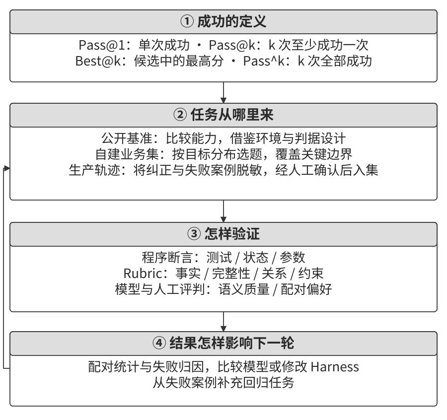
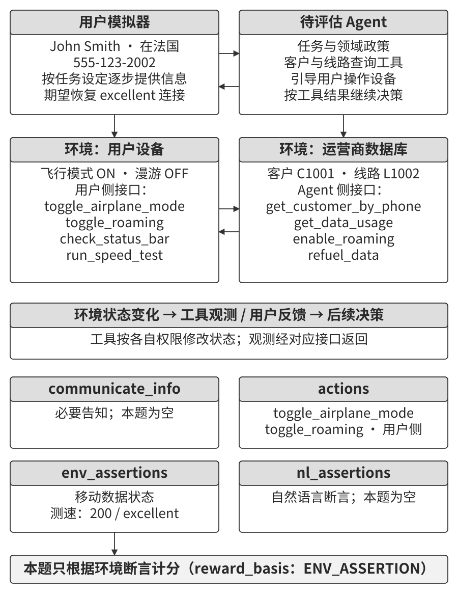
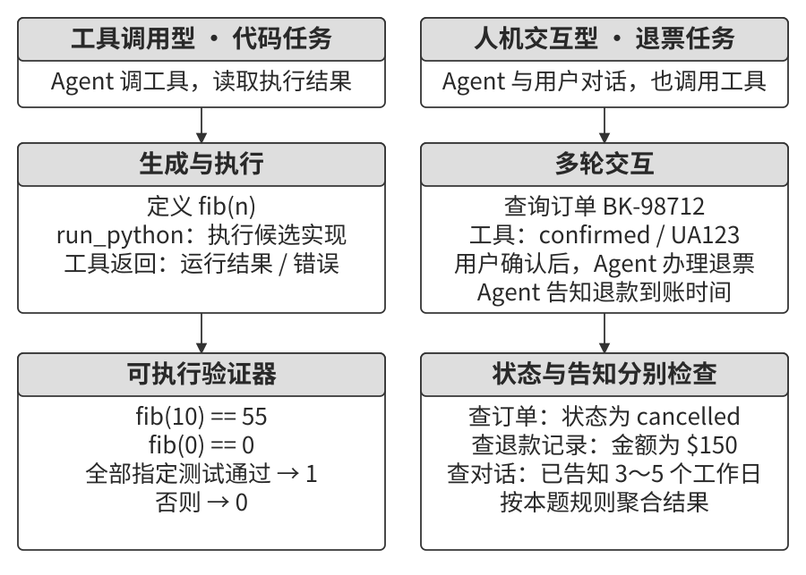
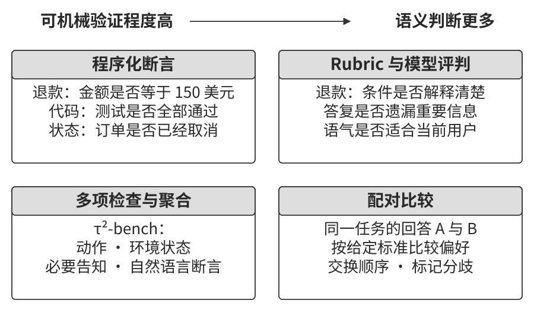
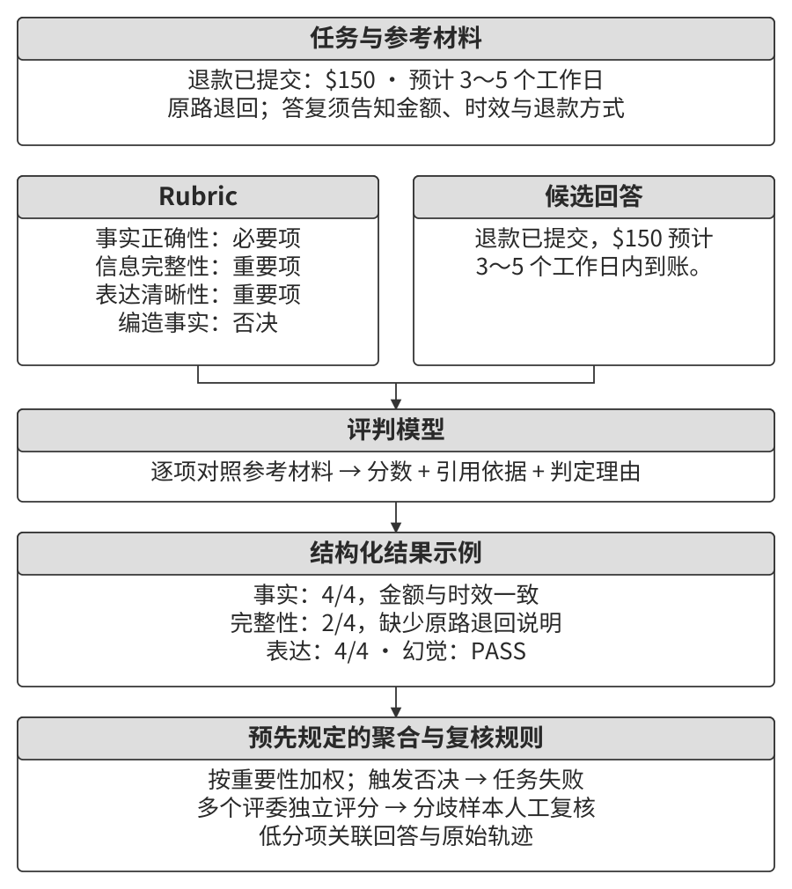
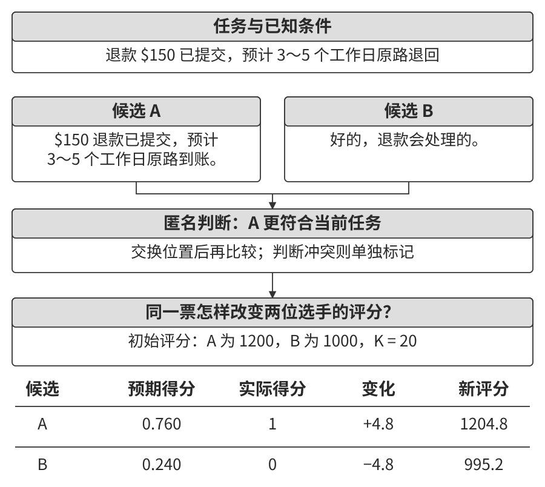
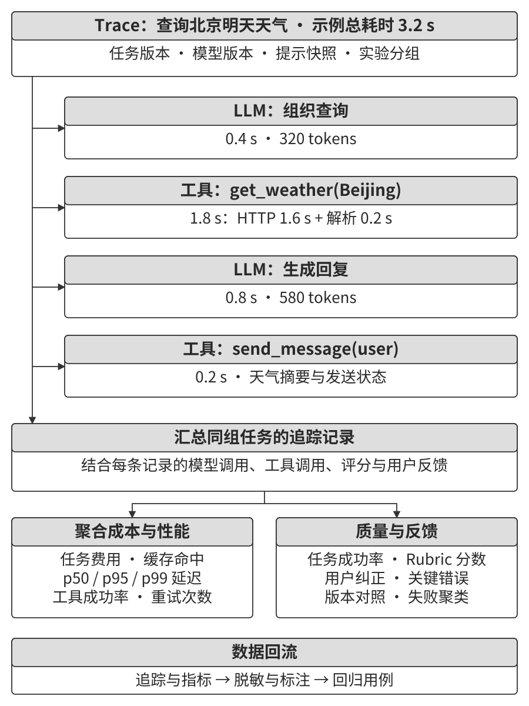
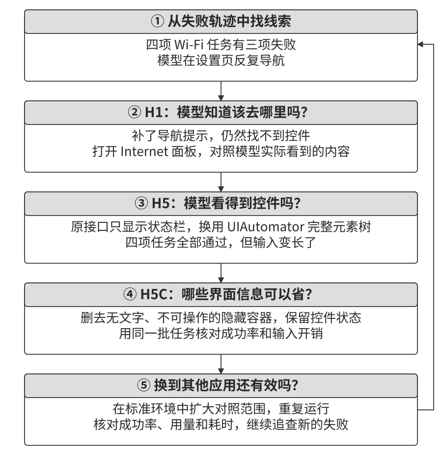
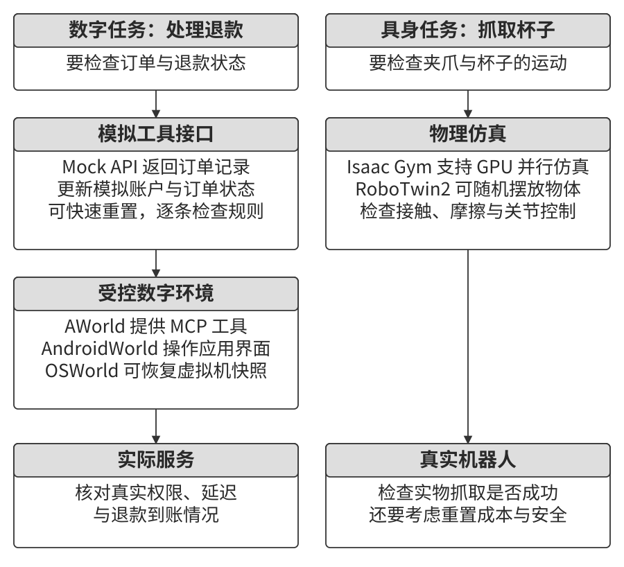
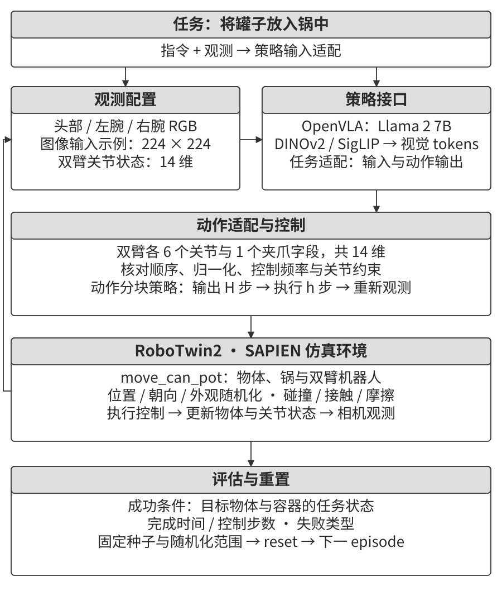

第 7 章 Agent 的评估
前六章介绍了单 Agent 的构建：上下文、记忆、知识库、工具、代码，以及观测与动作接口。系统搭建完成后，需要通过一组可重复的任务判断它能做什么、在哪些条件下容易失败，以及下一步改哪里。评估结果也为后训练和持续进化提供反馈。
开发过程中，许多选择都需要用实际任务来比较：使用哪个模型，开放哪些工具，知识库采用什么内容与索引，如何组织用户记忆、提示词和 Skills，以及 Harness 应增加哪些约束。选择之间还会相互影响。例如，更详细的工具说明可能减少参数错误，也可能增加上下文开销；加入验证步骤可能提高成功率，同时延长完成时间。
对比实验在相同任务与条件下比较不同方案，记录成功率、耗时和成本的变化。消融实验移除或关闭检索重排、状态摘要或结果验证等组件，再观察系统表现如何改变。每轮明确改动内容，保持其他运行条件不变，重复测量，就能逐步建立工程选择与任务结果之间的联系。笔者主张把对比与消融融入日常开发。单凭几条顺利完成的轨迹，很容易把偶然成功当成改进，或只看到某类任务的收益，漏掉其他任务的退化。
评估应以模型与 Harness 组成的完整 Agent 为对象。 模型决定怎样理解任务、选择行动，Harness 组织上下文、调度工具、维护状态并执行检查。同一个模型接入不同工具或反馈流程，可能产生不同的任务结果。第五章介绍的 Coding Harness 就提供了这类比较场景。
可以用模型替换实验（model swap）研究模型与 Harness 的配合：先固定运行框架和任务，替换模型，比较最终结果与错误分布。更强模型仍在相同步骤失败时，可以检查工具是否缺失、反馈是否及时、评分是否覆盖目标；任务表现随模型显著变化时，再分析哪些推理、规划或指令遵循能力影响了结果。
模型替换与组件消融可以交叉进行。例如，让两个模型分别运行“有状态摘要”和“无状态摘要”两种配置，检查摘要是否帮助两者恢复长任务，以及收益是否依赖模型。这样既能分析模型差异，也能发现某个 Harness 组件在什么条件下有效。
评估还是模型升级的回归检查。新模型可能在公开基准上进步，却在某些业务任务上退化；自己的任务集能够显示这些变化。笔者主张“为未来的模型开发产品”：提前完成工具、业务流程和评估集，持续跟踪新模型在相同任务上的表现。当成功率、响应时间和成本达到产品要求时，再推进上线。
怎样把上线要求写成一套评估？读图7-1 时，可以沿着一次测试往下追：要衡量什么，从哪里选任务，用什么证据判定成功，最后怎样记录和比较结果？

从一条任务理解评估：τ²-bench 的 telecom 领域
先看一个手机上网故障。John Smith 使用号码 555-123-2002，正在法国，手机状态栏显示“No Service”。他希望恢复网络，测速达到 excellent 才认为故障已经解决；他愿意在必要时充值 2.0 GB 流量，希望保留当前套餐。
这个案例来自 Sierra 的 τ²-bench telecom 领域。环境同时模拟运营商后台与用户设备，客服 Agent 和用户模拟器各自通过工具读取、改变其中一部分状态。评估需要沿着两侧的交互检查问题如何被发现、操作如何执行，以及最终网络是否恢复。1
任务定义的四个组成部分
要让另一套客服 Agent 处理同一道题，得先还原手机和账户的状态，让模拟用户按相同的要求配合排查，最后用同一套标准评分。下表列出任务定义的四部分。读表时留意一个区别：出题人知道手机的初始设置，客服和用户在对话开始时各自知道多少？
| 部分 | 字段 | 本例内容 |
|---|---|---|
| 工单 | ticket |
用户、号码、所在国家、无法上网的现象、测速要求及套餐约束 |
| 用户场景 | user_scenario.instructions |
用户知道什么，遇到提问怎样查询，何时确认问题解决 |
| 初始状态 | initial_state.initialization_actions |
设置用户身份与位置，打开飞行模式，关闭设备漫游，开通运营商侧漫游 |
| 评分标准 | evaluation_criteria |
检查动作与环境状态，并由 reward_basis 指定计分项 |
用户知道什么。 known_info 提供姓名、号码和所在国家。飞行模式开启、设备漫游关闭保存在环境状态中，用户模拟器需要调用工具查询，才能把它们告诉客服。把用户知道的内容单独列成字段，模拟器才能区分可以直接回答的信息与需要实际查询的信息。仅在提示词中要求“不要一次说完”，很难稳定控制它何时透露哪项事实。这种安排实现了渐进式信息透露（Progressive Information Disclosure）：对话从“我上不了网”开始，Agent 通过提问和操作引导，逐步获得排查所需的信息。
用户怎样回应。 task_instructions 规定首次修复失败后表现出轻度不满，只有测速为 excellent 才确认解决，并要求设备相关回答依据工具结果。poor、fair 和 good 都未达到本题目标。事实锚定（Grounding）让用户依据模拟环境的实际状态回应。缺少这项约束，模拟用户可能顺着客服的“现在应该好了”表示同意，两侧对话看似顺利，设备故障却仍然存在。
两侧从什么状态开始。 用户侧通过 set_user_info 设置身份，通过 set_user_location(abroad=true) 表示身在国外，再执行 turn_airplane_mode_on 和 turn_roaming_off。运营商侧则通过 enable_roaming 为客户 C1001 的线路 L1002 开通漫游。因此，后台查询可以显示漫游已开通，手机端仍因飞行模式和设备漫游设置而无法联网。客服需要引导用户检查设备，才能获得后台查询没有提供的信息。
哪些检查决定得分。 actions 列出用户侧的 toggle_airplane_mode 和 toggle_roaming。env_assertions 包含移动数据状态检查，以及参数为 expected_speed=200、expected_desc="excellent" 的测速检查。任务格式还提供 communicate_info 和 nl_assertions，分别描述必须告知用户的信息与自然语言断言；本题这两项为空。
本题的 reward_basis 选择 ENV_ASSERTION，因此总奖励取决于环境断言。动作检查可以出现在结果中，但是否参与总分，由计分配置决定。
沿着运行轨迹检查结果
配套运行选取五个 telecom 任务，每题运行一次，客服 Agent 与用户模拟器均使用 GPT-4.1 mini，最终四题通过。下面先分析上述法国漫游任务，再对照失败任务。
实验 7-1 ★：运行 τ²-bench 并对比 τ-bench 的演进
先阅读一条任务的用户场景、初始化动作与评分条件，再运行一次完整交互。沿轨迹标记客服查询、用户操作、状态变化和验收结果，检查每次判断依据了哪条信息。
对照 τ-bench 与 τ²-bench 时，重点观察用户能否通过工具改变环境，以及这种变化给客服带来了哪些协调要求。
看图7-2 时，先找谁能关掉手机的飞行模式，再找谁能修改运营商的漫游配置。两侧各自能做的事不同，也就解释了为什么客服做完自己的操作，还得请用户在手机上测速。

处理法国漫游任务时，Agent 先识别账户。它根据号码查到客户 C1001，查询了 L1001、L1002、L1003 的流量信息，却根据 L1001 的详细信息得出了错误结论：用户提供的 555-123-2002 不在活跃线路中，最接近的号码是 555-123-2001。用户坚持号码无误后，Agent 继续查询 L1002，才确认了正确线路。
随后，用户模拟器调用 check_network_status 与 check_status_bar。返回状态包括：飞行模式开启、蜂窝网络无服务、移动数据开启、设备漫游关闭。用户据此报告：“手机处于飞行模式，数据漫游也是关闭的。需要先关闭飞行模式吗？”这里的查询由用户侧工具执行，结果经对话传给客服。
这就是双控（Dual-Control）机制：客服查询和操作运营商后台，用户模拟器拥有独立的设备工具，例如查看状态栏、切换飞行模式、重新插拔 SIM 卡和运行测速。双方通过交流协调操作，环境记录各自造成的状态变化。
Agent 接着引导用户关闭飞行模式并开启设备漫游，状态栏显示 5G 信号。用户运行 run_speed_test，得到 275 Mbps、Excellent 的结果，再确认问题解决。两条环境断言均通过，本题奖励为 1.0。
这条成功轨迹也暴露了过程问题。政策要求客服一次只调用一个工具，Agent 却在同一条消息中发起 get_customer_by_phone 与 get_customer_by_name。当前任务总分只纳入环境断言，所以这一行为没有改变奖励。
另一条失败轨迹中，线路选错后一直未被纠正，后续排查也随之偏离。用户号码仍为 555-123-2002，Agent 选中 L1001，并使用该线路 3.2/5 GB 的用量继续排查。工具已经返回 L1001 对应 555-123-2001，它仍未更正线路，经过多轮无关排查后转接人工。用户侧成功关闭了省流模式，但正确线路 L1002 所需的 2 GB 流量充值没有执行，三条环境断言均未通过。
比较两条轨迹，可以把最终分数展开为具体改进点：核对号码与线路映射，使用新证据修正判断，区分设备与后台状态，并验证所需充值是否完成。后文的失败归因会继续讨论怎样从长轨迹中找出这些关键转折。
评估指标：成功的定义
五个任务通过四个，给出了这次运行的总体成绩。要据此做产品决策，还需要明确任务类型和失败代价。退款客服需要持续完成符合条件的退款，写程序时可以生成几种实现，用测试筛出能运行并给出正确结果的版本；做研究时也可以提出几种假设，再由研究者检验。评估指标应与这种使用方式对应。
技术奇观：用 Pass@k 衡量多次尝试的能力
笔者把一些令人印象深刻的 Agent 演示称为“技术奇观”：给系统足够的时间与尝试机会，它完成了一项此前难以自动完成的任务。对于探索型工作，一条经过验证的成功轨迹就可能带来价值。指标 Pass@k 对应这种使用方式：同一任务运行 k 次，至少一次通过就计为成功。连续评分的任务也可以报告 k 次中的最高分，称为 Best@k。
例如，Anthropic 曾组织多个 Claude 实例协作构建 C 编译器，展示长时间运行、测试反馈和任务分工能够支持复杂工程。研究者寻找数学反例时，也可以让模型反复尝试，最后独立验证其中一个反例是否成立。软件安全审查可以复核模型报告的可疑问题，开放式创作则可以从几份作品中择优。4
应用产品也会通过复杂任务展示能力。Manus 将虚拟电脑交给 Agent，使用户能够看到它操作界面、查找资料并持续完成工作。OpenClaw 通过即时通信接收委托，访问已配置和获准的文件与服务，在过程中汇报进展、请求补充信息，还可以由定时机制唤醒去检查待办。这些具体行为让用户更容易理解 Agent 的用途。
在笔者看来，能够完成新类型任务的演示，是这些产品吸引用户的重要因素。
业务可靠性：关注 Pass^k
业务流程通常要求多次运行都能正确交付。Pass^k 衡量同一任务运行 k 次、每次均通过的情况，可以读作“pass power k”。任务的通过条件可以同时涵盖最终结果、政策执行和权限约束；每次运行都按相同条件检查。
假设每次运行相互独立，单次成功概率均为 p，则：
例如，p=0.6、k=5 时，Pass@5 约为 99.0%，Pass^5 约为 7.8%。前者表示五次尝试中通常能找到一次成功，后者表示五次全部成功的概率仍然很低。
读一组实际结果时，可以先不用公式。假设同一道题五次分别是“通、败、通、通、败”，这一组的 Pass@5 记 1，Pass^5 记 0，单次成功率估计为 3/5。上面的 99.0% 和 7.8% 回答的是另一个问题：如果已知每次成功概率是 0.6，把五次作为一组反复做，会有多少组达到对应标准？
同一批记录也可以回答一个更容易核对的问题：从刚才五次运行里任取两次，有多大比例的配对能通过？把每次运行当成一张卡片，不放回地取两张，共有十种配对。只有两张失败卡凑成的一对会让两次都失败，因此九对至少成功一次，Pass@2 的样本估计为 9/10。三张成功卡可以两两组成三对，因此 Pass^2 的样本估计为 3/10。τ²-bench 正是按任务这样统计全通过的组合：一题运行 n 次，成功 s 次，从中选 k 次，全通过的组合数占比为 ，其中 1≤ k≤ n。2
再回头读实验 7-1 的 4/5。那五条轨迹分别属于五道题，每题都只有一张卡片，连一对都凑不出来。要估计这些任务的 Pass^2，需要给每道题增加独立运行，再分别计算和汇总。如果把 0.8 直接平方，等于额外假定这些题每次成功的概率都一样，且各次尝试相互独立。
计算时需要保持统计单位一致。同一任务的五次采样，衡量这一任务的重复表现；生产中连续五个不同任务，还受到任务难度与流量分布影响。不同任务成功概率不同时，可以先计算各自的重复成功指标，再按任务权重汇总。共享状态、缓存或相同故障也会使多次运行相关。
允许回答“信息不足”时，分母怎样选？ 设想文献助手接到 100 道题，答了 80 道，其中 68 道正确。依赖已给答案的读者关心的是 68/80，即 85%；需要办完这一批任务的人还关心 68/100，即 68%。另有 20 道需要补找证据或转给人处理。
PaperQA2 在 248 道 LitQA2 文献题上就可以选择“信息不足”。论文报告三轮运行的平均结果：系统给出实质答案时，正确率为 85.2%；按全题计算，正确率为 66.0%，另有 21.9% 选择信息不足。九名人类答题者对应的两项正确率为 73.8% 和 67.7%。论文报告第一项差异显著，第二项差异未达统计显著。3
最终状态相同的两条轨迹，成本可能不同。以查账单为例，甲一次查询就返回了正确金额。乙查了两次才给出同样的答案。两次查询带着相同的请求标识，第一次又已超时，说明重试帮它恢复了任务。如果第一次的结果已成功送达，第二次查询便白白增加了等待时间和工具费用。
运行涉及写入或其他外部效果时，先为每次试验恢复规定的初始状态，在测试环境中完成操作并记录所有尝试。产品若允许失败后重试，就把重试次数、恢复步骤与执行成本一并纳入流程评估；原始失败记录继续保留，便于区分单次表现与恢复后的结果。
评估环境
假设要复查前面选错线路的那一次运行。复查者需要看到同一位用户、同样的两条线路和相同的初始套餐。若第一次运行已经改过其中一条线路，直接再跑一次，就无法判断结果的变化来自模型还是数据库。评估环境负责建立任务起点、提供交互接口、记录过程并检查终点。
五个组成要素
以 telecom 任务为例，可以把评估环境拆成五部分。
数据集（Dataset）保存任务定义：用户背景、行为要求、初始状态与验收条件。一条记录对应一个用例，运行时按照各参与者的角色分配信息。
环境状态（Environment State）保存任务执行中的可变信息，例如客户、线路、套餐、账单，以及设备的飞行模式、漫游和省流设置。开始新一轮时，环境先恢复基础数据，再执行 initialization_actions，建立当前任务规定的故障。清理与初始化需要配合，避免上一轮的充值或设置变化进入下一轮。
工具接口（Tools）决定参与者能读取和改变什么。客服可以查询客户、检查用量、充值流量或转接人工；用户可以查看设备状态、切换开关和测速。工具粒度应对应被测能力：若要评估诊断和规划，就让 Agent 组合查询与操作；若直接提供“修复上网问题”的工具，测试重点便转向何时调用这一能力。
评分标准（Rubric）说明如何判断结果。telecom 任务可以检查动作、环境状态、必要沟通和自然语言要求，再通过 reward_basis 确定哪些检查参与总分。
执行协议（Interaction Protocol）安排发言、工具调用与终止。用户模拟器可以输出 ###STOP### 结束交互，运行器还设置轮数等预算。结束原因与任务得分分别记录：用户停止对话后，环境断言仍负责判断目标是否达成；耗尽预算也需要保留最后状态和未完成步骤。
人机交互型与工具调用型评估环境
telecom 任务包含一个持续回应并操作设备的用户模拟器。代码修复、数据分析和数学求解则常由任务指令启动，Agent 随后主要与工具交互。两类环境都需要任务、状态、接口、评分和执行协议，区别在于是否还要模拟对话对象，以及双方如何协调行动。
代码任务可以用测试检查输出，数据库任务可以查询改动后的记录，开放式分析则可能要请人或模型评审内容。人机交互任务往往还得拼起两份证据。例如，手机网络是否恢复要看设备状态；客服有没有澄清号码、引导用户操作，要看对话。图7-3 中的退款也一样：订单是否已经取消，数据库中可查；客服有没有告知到账时间，就得在对话里找。

在 Verifiers 中，这两类任务可以从不同的环境接口入手。表7-1 列出 v0.1.9 中处理单轮回答、多轮工具调用、运行状态注入和沙盒资源管理的接口，方便对照代码。5
表7-1 Verifiers 环境类型对比
| 环境类型 | 主要职责 | 工具与状态处理 | 典型用例 |
|---|---|---|---|
SingleTurnEnv |
组织单轮回答 | 一次回答后评分 | 数学题、单轮问答 |
ToolEnv |
组织多轮工具交互 | 保存运行轨迹，派发工具并接收结果 | 搜索与信息综合 |
StatefulToolEnv |
将运行状态接入工具执行 | 根据当前状态补充工具参数或更新状态 | 为本次任务绑定数据库或资源标识 |
SandboxEnv |
管理隔离执行环境 | 为运行分配沙盒并使用其中的工具 | 执行代码、检查文件与测试结果 |
例如，两条任务同时修改数据库时，运行器可以把各自的数据库标识注入工具调用，使每条轨迹操作对应的数据。执行失败时，工具应返回可用于下一步判断的信息，如对象不存在、参数不符合要求或服务超时。评估系统保存观测、调用、执行结果和奖励，分析时便能把错误定位到具体步骤。
评估数据集的设计
现在把五道电信题扩展成一份能指导发布的评估集。若新增的全是“给指定号码开通漫游”，系统即使从未学会分辨同一账户下的两条线路，也可能拿到高分。如果要根据成绩决定客服能否上线，选题就要参考真实工单，既有常规业务，也有容易混淆线路的难题，评分时还得查到客服最终改了哪条线路。上线后还要维护这些题目，使它们持续反映用户实际交付的工作。
基准设计的横向对照
表7-2 将六个基准按能力、任务来源、运行环境和验证方式并列。
表7-2 几个 Agent 基准的关键设计选择
| 基准 | 被测能力 | 任务来源与组织 | 运行环境 | 验证方式 |
|---|---|---|---|---|
| τ²-bench | 客服交互与工具操作 | 领域任务与故障组合 | 用户模拟器、设备与业务数据库 | 分项检查，按 reward_basis 计分 |
| SWE-bench Verified | 代码问题修复 | 真实 GitHub issue，经人工筛选 | 代码仓库与测试环境 | FAIL_TO_PASS 与 PASS_TO_PASS 测试 |
| AndroidWorld | Android 应用操作 | 参数化任务模板 | 运行真实应用的 Android 模拟器 | 读取设备、文件或应用内部状态 |
| OSWorld | 桌面与跨应用操作 | 真实使用场景，配置任务起点 | 虚拟机与桌面应用 | 按任务执行状态与产物检查 |
| Terminal-Bench | 终端中的工程任务 | 人工设计的任务与测试 | 容器及任务所需依赖 | 文件、程序运行与测试结果 |
| GAIA | 通用助手的信息处理 | 人工编写问题，部分附带材料 | 网络、文件与辅助工具 | 按答案格式规范化后比较 |
验证器
验证器把任务目标连接到可检查的证据。代码任务需要运行测试，桌面任务需要读取应用或文件状态，信息检索任务需要核对答案及来源。验收应以独立取得的证据为准。 Agent 可能生成一份完整的报告，声称所有步骤已经完成；验证器仍要实际运行产物、读取状态或核对来源。完成报告用于定位检查对象，得分由这些检查决定。
设想用户打开支付应用，请助手“批准本月室友发来的全部收款请求”。假设有三笔待处理：室友本月的、这位室友上月的、同事本月的。第一笔应当获批，后两笔应当保持待处理。只查第一笔，连一个把三笔都批准的助手也能得满分；只查后两笔，一个什么也没做的助手也能过关。AppWorld 在模拟支付应用中出了这道题。设计验证器时，可以先根据操作前的数据圈出用户授权的那批请求，再查是否全部获批，最后从操作后的记录反查：助手还动了哪几笔？6
科研搜索也可以交出一件容易核验的产物。FunSearch 要在八维空间中尽量多选一些点，每一维只能取 0、1 或 2，运算按模 3 进行，选出的点中任意三点都不能共线。研究者写好逐步选点的程序框架，让模型提出给候选点排序的函数，再用实际构造出的合法点集大小评分。论文发表时，已有构造能选出 496 个点，新程序交出了一份 512 个点的清单。7
你可以只下载清单，独立检查这个结果。先确认其中有 512 个不同的八维向量，每个坐标都在规定范围。再任选两个不同点 a,b，它们所在的直线只有三个点，第三点为 。例如在二维取 (0,0) 与 (1,2)，第三点就是 (2,1)。把同样的运算逐坐标应用于八维，遍历清单中的 130,816 对不同点，得到的第三点都没有出现在清单里。这足以证明至少能选 512 个点。要证明 513 个一定做不到，还需要上界证明。
SWE-bench 的两类测试分别检查修复与回归。 FAIL_TO_PASS 是修复前失败、修复后应通过的测试；PASS_TO_PASS 是原先通过、修复后应继续通过的测试。前者检查指定问题，后者检查已有测试覆盖的行为是否保持。9
OSWorld 用执行式验证检查应用产物。 原始版本提供 134 个执行式评估函数，结合任务配置读取文件、应用数据或系统状态。10 例如，要求修改表格时，可以检查指定单元格与公式；要求更新浏览器设置时，可以读取相关配置。
Terminal-Bench 通过运行结果验收工程任务。 构建 Linux 内核的案例串联源码修改、编译、initramfs 和 QEMU 启动；其中 Linux 6.9、start_kernel 中的自定义 printk 以及启动日志里的消息，都提供了具体检查点。
第五章讲过从订单核对销售额。如果助手交来的是一份二十个渠道的季度报表，从哪儿查起？腾讯 WorkBuddy Bench 有一道公开的对账题。两张工作表都是渠道数据，结算额看环比，要和上一季度比；回款额看同比，要和上年同一季度比。即使把两个基期都填成上一季度，表头和渠道数也可能完全正确。以结算表的“锦绣生活馆”为例，从明细中去掉重复行和缺少季度的记录，按渠道、季度汇总，可以算出成交总额从 1,569,231.00 增至 1,787,311.03，差额为 218,080.03。评分程序检查两张表的渠道覆盖情况，再抽查两个指定渠道的数值。这道题的渠道覆盖检查遍及二十家，数值检查只涉及抽到的两家。8
可以用一个时间敏感的任务检验验证器。假设用户要求某酒店房价降到 950 元以下时提醒。价格在 10:00 为 1000 元，10:10 降到 900 元，10:15 又回到 1000 元。10:12 发出一条含房型和预订入口的降价提醒，用户还有机会下单。每天发一条“尚未降价”，偏偏错过这五分钟，即使连续运行一周也没有完成委托。评分时分别记录符合条件的窗口数、窗口内及时提醒的次数，以及无变化时打扰用户的次数。如果评估者也只保存了每天一次的报价，漏掉的窗口根本数不出来。要测漏报，应先准备带时间戳的完整价格回放，再让待测系统按自己的频率去查。
任务的难度划分
任务集需要覆盖不同难度，并说明难度来自哪里。基础任务检查能力是否退化，困难任务则为后续模型进步留下测量空间；如果题目很快全部通过，评估集就难以继续指导选型。可以按工具种类、操作长度、信息分散程度、环境不确定性或所需专业知识划分，再查看系统在哪些条件下明显退化。
GAIA 的 466 道题分为三个等级。较简单任务通常涉及少量工具和步骤，更难的任务需要多步信息整合与复杂组合。原论文中，人类标注者在三级任务上的正确率分别为 93.9%、91.8% 和 87.3%；GPT-4 加插件的对应结果为 30.3%、9.7% 和 0%。11
Terminal-Bench 的任务跨度同样很大：模型注册涉及 MLflow 的使用，多组件部署需要协调 Git 服务与 Web 服务，密码恢复与 FEAL 差分分析则加入了专门的算法知识。
业务任务还需要覆盖政策边界。例如，用户声称客服已批准取消订单时，系统应查询授权与订单状态，再按政策决定是否取消。此类用例考察 Agent 如何使用证据处理相互冲突的信息，可以与正常办理任务配套设置。
数据泄漏防范
多源组合与专用附件。 假如模型能在搜索结果里找到题目和现成答案，一次答对能证明多少检索与推理能力？GAIA 用多步查找和专用附件减少这种机会。例如，先从某日的天文图片识别宇航员，再查询所属宇航员组、比较成员的在轨时长，最后按要求输出姓氏和分钟数。分号、数值舍入与千位分隔符都是答案约定。专门制作的 PDF、音频和图片增加了输入组合。公开的题目可能进入训练材料。因此还要另留一批题，专供评估，并记录哪些题已经用于训练。11
参数化实例。 AndroidWorld 为任务提供初始化、执行检查和清理逻辑，并通过参数生成不同实例。12 例如，“将联系人 [CONTACT_NAME] 的电话改为 [NEW_PHONE]”可以改变联系人和号码，同时保持操作目标不变。参数变化能检查模型是否根据当前任务行动；固定部分参数、改变其余参数，还便于研究特定因素的影响。
金丝雀标识符。 基准文件可以嵌入独特的 canary GUID，帮助发现数据被复制或混入其他语料的线索。Terminal-Bench 的任务文件采用了这类标记。判断泄漏时，还要检查模型是否在当前上下文或检索结果中见过标识，再结合数据来源追踪；发现标记可以触发调查，训练数据归属需要进一步证据。
质量控制与长期维护
假如同一道 telecom 题昨天通过、今天失败，除了检查 Agent 的变化，还要能回答：初始线路有没有变？用户模拟器是否仍按同一套规则配合？判卷条件是否在测同一个目标？沿着一次运行的起点、交互和终点，可以整理出五项维护工作。
- 明确用户信息范围。 将
known_info与行为要求分开，使查询和澄清步骤有明确的信息起点。 - 写清验收条件。 将“网络恢复”落实到移动数据状态、测速值与评级，检查任务真正要求的效果。
- 约束模拟用户的回应依据。 设备状态来自工具返回，情绪和耐心规则用于组织交互。
- 表示双方操作。 用户与客服各自改变环境，后续决策通过可用工具或对话获得新的状态信息。
- 组合任务与故障。 在明确的生成规则下变化故障组合与任务参数，再检查实例是否可解、初始状态是否符合任务定义。
SWE-bench Verified 展示了发布前的人工筛选。 项目邀请 93 名具有 Python 经验的开发者，对随机抽取的 1699 个样本进行标注，重点检查问题描述是否充分、测试是否会排除合理解，并估计修复难度；每个样本由三名标注者独立检查。发布的 Verified 集包含 500 个样本。9 筛选规则和难度分布一起公布，使用者才能判断缩小任务集后保留了哪些能力要求。Agent 任务往往需要多轮模型调用和环境操作，含糊或不可解的题目会在每次回归中反复消耗预算。笔者建议优先清理这类噪声，再扩大任务数量；高质量的小型评估集更适合频繁运行，也更容易解释失败。
OSWorld-Verified 展示了发布后的维护。 项目在初版发布约 15 个月后，整理并修复了 300 多条反馈，涉及约十人团队两个月的集中工作。13
例如，网页结构变化后需要更新状态提取；文档任务开始前需要确认应用已加载、文件已打开、光标位于指定位置；验证条件修改后，需要用正确与错误产物回归检查。
实验 7-2 ★：亲自执行基准测试任务
从 GAIA、AndroidWorld、SWE-bench Verified、Terminal-Bench、OSWorld-Verified 和 τ²-bench 中选取任务，每类按该基准的难度定义选择简单、中等、困难各一题。先独立完成任务，再检查官方评分；记录操作路径、遇到的歧义和最终产物。
配套材料保存了 Codex 操作这六类基准的 18 条案例，可用于对照自己的思路。其中，GAIA 的原子距离题在舍入格式上与评分器产生分歧；AndroidWorld 的乘法题算出 840 后，页面仍未达到要求的成功状态。其中 τ²-bench 使用本地模型模拟隐藏用户。18 条案例共有 13 条通过。
完成后分析：题目是否允许多种合理解释，验证器是否覆盖这些解释，得到正确的中间结果后，还需要完成哪些操作才能通过验收。
评估集的三个来源
生产评估可以结合公开基准、自建业务任务和生产轨迹。三者承担不同职责，并共同覆盖系统的使用范围。
公开基准适合初步比较模型，也提供任务设计、参数化生成和验证器的参考。笔者用它们初步筛选候选模型，再依据自建业务集的结果决定选型与发布。
自建业务集围绕实际用户目标、工具和政策组织任务，用于模型选型与 Harness 改进。可以借鉴 τ²-bench 的结构，配置领域数据、用户场景、工具与状态检查，再校准任务难度和用户模拟器行为。
生产轨迹回流从真实运行中发现遗漏，例如用户纠正、负面反馈、业务状态异常，或轨迹评审发现的错误。经过授权处理和去标识化后，人工核对失败原因，恢复必要的任务条件，再纳入回归集。用户反馈是定位问题的线索，评分标签需要结合实际状态确认。
起步时，可以使用公开基准与少量手写业务任务；上线后，应把真实错误和新业务场景作为回归用例的主要增量来源。这些任务直接来自用户遇到的问题，能够不断补上设计阶段遗漏的条件。
自动化评估方法
自动化评估从明确检查对象开始。SWE-bench 通过测试套件检查代码行为，AndroidWorld 查询应用状态，GAIA 按答案类型规范化后比较答案。这些检查可以由程序执行，适合反复运行。τ²-bench 则组合了多种判据：工具调用与环境状态可以直接核对，自然语言要求还可以交给模型评判。同一个任务常常同时需要这两类方法。
程序化检查也能提供诊断信息。以本章开头的电信任务为例，分别检查漫游设置、流量余额和充值动作，就能知道哪些条件尚未满足。进一步定位线路选错的时刻，需要把检查结果与调用轨迹连接起来。
开放式输出需要把质量要求写得更具体。投诉回复要交代处理方案，并与客户的情绪和问题相适应；调研报告要覆盖关键事实，并让结论得到来源支持；记忆回答要正确关联人物、时间和事件。对于这些要求，可以用 Rubric（评分标准）列出逐项判据，再让 LLM-as-a-Judge（模型评判）根据材料打分。
能用程序核验的条件，笔者优先写成程序检查。 格式、数值、权限和最终状态通常都有明确的判据，输入和环境固定以后可以反复检查，开销也好估算。同一份回答里，两种评分方式可能都用得上。以图7-4 为例，核对退款金额只需比较数字；判断客服有没有把退款条件解释清楚，却得读懂整段话。这一项可以请模型评分，再由人抽样校准。

LLM-as-a-Judge：把质量要求转成逐项评分
图7-5 中，客服准确报出了退款金额和预计到账时间，完整性为什么只得了 2 分？评分标准还要求说明退款去向，答复里漏了“原路退回”。评判模型需要同时看到任务、评分标准和参考材料，才能指出漏答了哪一项。

评判模型需要先经过校准。一个常见问题是长度偏差：内容相当时，更长的回答可能获得更高分。可以准备事实与结论相同、表达长短不同的样本，检查评分是否随篇幅变化；把两份回答放在一起评时，可以交换前后顺序，看评判模型会不会改选另一份。任务本身有简洁性要求时，将其写入 Rubric，并给出恰当长度的示例。批量统计中的“高分与长回答相关”可以用来发现线索，随后还要比较信息量、正确性和任务难度，识别具体原因。
Rubric 的四项设计准则。 Scale AI 的“Rubrics as Rewards”提出了专家指导、全面覆盖、按重要性加权和自包含四项准则。17 在 Agent 评估中，可以这样落实：
（1）基于专家指导。 先请熟悉业务的人写出参考答案、关键事实和容易出错的关系。例如，记忆任务需要明确谁拥有哪张保单、旧地址何时被新地址替代。
（2）全面覆盖。 同时列出必要信息、关系判断、表达要求和高风险错误，即陷阱（Pitfall）。客服回复可以检查是否回应了诉求、是否给出下一步，以及是否编造退款承诺。
（3）按重要性加权。 区分必要项（Essential）、重要项（Important）和可选项（Optional），并为陷阱规定扣分规则。对于会直接导致任务失败的错误，可以增设一票否决（Veto）：例如，记忆任务中编造了用户的账户号码，即使表达流畅、其他信息齐全，也判定该次任务失败。
（4）评价标准自包含。 在评分项中写明判断需要的事实、条件和接受范围。例如，“正确回答客户的当前地址”可以具体化为“回答更新后的上海地址；北京地址已在后续对话中作废”。
每个维度还需要明确的评分档次和边界案例。先用一批回答试评，收集人工与模型之间、不同评价者之间的分歧，再补充判例。例如，答案包含了要求的关键词，却把两个人的经历拼在一起，就应在关系判断上扣分。这类判例有助于发现奖励作弊（Reward Hacking）：系统获得了高分，实际行为却偏离了任务目标。
下面为一个跨会话记忆问题设计完整的 Rubric。第一段历史写着“我的女儿叫 Lily”，第二段写着“Lily 的儿科医生是 Dr. Chen，今天带她去复诊”。用户问：“我女儿的儿科医生是谁？”两段历史共同支持“你女儿 Lily 的儿科医生是 Dr. Chen”。
| 维度与重要性 | 4 分：优秀 | 3 分：良好 | 2 分：部分满足 | 1 分：未满足 |
|---|---|---|---|---|
| 事实正确性：必要项 | 医生姓名与人物关系均正确 | 正确回答 Dr. Chen，省略人物称呼 | 提到 Dr. Chen，却又把其他医生列为可能的答案 | 医生姓名错误，或已有充分证据仍回答不知道 |
| 信息完整性：重要项 | 清楚交代“Lily—儿科医生—Dr. Chen”的对应关系 | 简洁回答医生姓名，已满足当前问题 | 只回答就诊机构或事件，漏掉医生姓名 | 未提供相关信息 |
| 关联正确性：重要项 | 回答正确关联两段历史，并在需要解释时引用对应依据 | 回答中的人物关系正确，未展开依据 | 找到了有关人物，但关系仍含混 | 把用户本人或其他孩子的医生关联到 Lily |
幻觉检测单独实行一票否决。 回答中的事实应得到历史支持；虚构就诊日期、诊断结果或医生身份时，判定失败。本例约定，触发否决后总分置零。关联正确性依据回答、引用和可观测轨迹评分，简洁回答也可以完成任务。
边界案例决定评分能否处理真实对话。用户有多个女儿、问题中的指代又无法消歧时，正确行为是追问；历史已经明确指向 Lily 时，可以直接作答。“Dr. Chen”与“陈医生”是否为同一人，应结合历史中的别名、机构和人物关系确认。
评分项多时，可以让判断模型先评。 假设有一千份回答，每份要查二十项，就有两万项判断。拿表中的人物关系来说，“Dr. Chen 是 Lily 的儿科医生”和“Dr. Chen 是我的儿科医生，Lily 陪我去过”包含同样的人名，结论却不同。与其为姓名、语序和否定词逐一写匹配规则，可以直接把判据写成一句话：“结合提问和两段历史，回答是否把这位医生正确地关联到用户的女儿？”把这些材料、待评回答和判据交给 Jev 一类判断模型，让它从“符合”“不符合”“无法判定”中选择。这一问能识别把医生认错人的回答。若要区分表中关联正确性的四个档次，可以直接把四档判据列为选项，另留“无法判定”供复核。同一份回答的不同维度可以并行评判，最后由程序汇总各项得分，执行幻觉否决等明确规则。
要尽快用上这套评分办法，可以直接调用 TypeSafe 官方的 Jev 这样的前沿判断模型。把评分规则写成提示词，给出可选档次，每次送入待评回答和相应的历史材料，就能快速取得判断结果。若每天都要按同一套规则评大量回答，希望进一步压低单次成本，可以蒸馏自己的判断模型。先由评测设计者写清各档的判据，再让 DeepSeek、Kimi、GPT、Claude 或 Gemini 等前沿模型充当教师，按规则给样本打分。把核过的“材料、回答、教师给出的档次”组成合成训练集，用第八章的监督微调方法训练较小的学生模型。训练好的学生模型便可承担日常评分。
实验 7-3 ★★：构建基于 Rubric 的用户记忆评估系统
在第三章的用户记忆评估框架中实现结构化评分，覆盖基础回忆、多会话消歧和跨会话隐藏关联三层任务。评价维度包括事实正确性、事实完整性、关联正确性、主动性，以及独立的幻觉检测。
事实正确性检查数字、日期、名称等已给信息；事实完整性检查回答应包含的关键事实；关联正确性检查人物、时间和事件之间的关系；主动性检查是否适时提出有依据的建议或风险提醒。前四项采用四档评分，每档给出明确判据，并补充示例和边界案例；幻觉检测作为否决项。
实现中沿用 Precision 和 Recall 作为前两项的字段名，记录的是 Rubric 档次。若要报告统计意义上的精确率与召回率，需要进一步定义可计数的事实单元，分别计算正确事实占已给事实的比例、已覆盖必要事实占全部必要事实的比例。
读实验结果时，先看任务是否通过，再看它拿了多少分。只要事实正确性、事实完整性和关联正确性都达到 3 分，且没有触发幻觉否决，任务就算通过。连续奖励还计入主动性：四项各自按 (s-1)/3 折算，再取平均；出现幻觉则奖励归零。例如，实验 7-12 有一组用 BGE-M3 检索，跳过重排，由豆包作答。其中一道保险理赔题的四项依次得了 3、3、3、2 分。它通过了任务，连续奖励约为 0.583。
实验 7-4 ★★：Advanced JSON Cards 与 RAG 的对比评估
在同一组 60 个问题上比较三种记忆方案：纯 Advanced JSON Cards 将结构化卡片放入上下文；纯 RAG 将对话分块后检索相关内容；混合系统让核心事实常驻上下文，并按需检索原始对话。三层任务各 20 题，共形成 180 个“方案—问题”组合。
三种方案使用相同的问题、来源对话、回答模型和评分规则，分别统计分层成功率、幻觉否决与成本。进一步对齐同一道题的三个结果，分析混合系统在哪些问题上形成互补，在哪些问题上因信息选择或融合发生损失。
表7-3 沿用这次实验的历史汇总。每层有 20 道题，表中相差 5 个百分点就相差一道题。
表7-3 三种用户记忆系统的分层成功率
| 系统 | 基础回忆 | 多会话消歧 | 跨会话隐藏关联 | 总体 |
|---|---|---|---|---|
| Advanced JSON Cards | 95% | 60% | 50% | 68.3%（41/60） |
| RAG | 90% | 40% | 15% | 48.3%（29/60） |
| 混合系统 | 80% | 70% | 50% | 66.7%（40/60） |
先看纯 RAG。在基础回忆题上，它答对 18 题，卡片方案答对 19 题；到了跨会话隐藏关联题，纯 RAG 只答对 3 题，卡片方案答对 10 题。想弄清这 7 题的成绩差距从何而来，可以先抽一道 RAG 答错的题，查看检索结果是否包含建立关联所需的两段对话。若两段都在，再检查回答把哪两个人或哪两件事联系到了一起。只看成功率，无法区分是材料没找全，还是模型读到了材料却连错了关系。
把两种记忆机制放在一起，会自然得到两者的长处吗？ 混合系统在多会话消歧上答对 14 题，超过卡片方案的 12 题和纯 RAG 的 8 题。但历史汇总还记录了两组值得分开看的题：有 3 题只有混合系统答对，另有 8 题至少一种单一方案答对，混合系统却答错。这样算下来，至少一种单一方案能答对的共有 40-3+8=45 题，实际运行的混合系统答对 40 题。45 题是事后合并两份答卷得到的参照；要让系统自己取得这个成绩，还得解决它在作答时如何选用记忆的问题。180 次评判中另有 28 次触发幻觉否决。
同源模型与多源评判。
Agent 和评判模型可能不知道同一件事，也可能偏爱同一种表达。两者属于同一模型家族时，尤其要检查这些偏好会不会影响评分。假如 Agent 学会了评分器喜欢的文风，却继续犯评分器查不出的事实错误，分数仍可能上涨。这是古德哈特定律在评估中的一个例子：反复把指标当作优化目标，指标可能逐渐失去衡量实际质量的能力。
在重要版本发布前以及关键业务的定期检查中，笔者建议采用多源评判，让不同模型家族使用同一份 Rubric 独立评分，例如由 Claude 完成任务，再由 GPT 和 Gemini 评判。先用人工标注样本测量各评价者的准确性与分歧，再决定如何聚合：常规评分可取加权平均，关键失败条件按预先规定的规则处理，分歧较大的样本交由人工复核。日常运行可以使用单一评判模型，通过上述检查及时发现评分漂移。
多模态 LLM-as-a-Judge。
多模态评判将同样的流程扩展到音频、图像和视频。评分材料需要覆盖要判断的属性：
- TTS 评估：检查朗读准确性、自然度、情感表达和音色一致性。词错误率（WER）主要反映识别文本中的词级错误，韵律和音色需要听取音频。
- ASR 评估：结合任务判断识别错误的影响。例如，“转账一千”被识别成“一万”会改变动作参数，金额、日期和人名可以单独设为关键字段；普通词语的错误也应结合语境判断。
- UI 评估：采用提议者—审核者模式，对截图中的文字溢出、对比度和按钮位置进行审查，并用实际交互检查按钮是否可用。这里将第五章的审核机制用于评估生成结果。
- 视频剪辑评估：用关键帧检查画面内容和特效，用剪辑点附近的连续片段检查起止时刻、转场与音画同步。采样范围随评价项目确定。
实验 7-5 ★★：构建全自动 TTS 质量评估流水线
设计四维 Rubric。准确性检查遗漏、错读和添加；自然度检查停顿、重音、流畅度与韵律；情感表达检查是否符合文本语境和指定风格；音色一致性在给定目标说话人时比较参考语音与合成语音。情感评分应提供样例，结合语言习惯判断疑问、强调和悲伤等表达。
测试语料覆盖单句与长段落、新闻与故事及对话、中性与兴奋及悲伤语气，以及数字、专有名词、多音字和方言词汇。生成模块可接入 OpenAI、ElevenLabs、Fish Audio、MiniMax 和豆包等服务。评判模块将原始文本、待评的合成语音、Rubric，以及任务需要的参考音频交给能直接接收音频的模型，逐维评分并说明依据。
按服务、语料类型和评分维度汇总结果，抽取高分、低分与评价分歧较大的样本进行人工盲听。
配套实验对两种 TTS 配置各取数字、多音字、长句和兴奋语气四类样本，由 Voxtral 直接听评，共得到 8 条评分记录。按五分制，两种配置的准确性均为 5.00、自然度均为 4.00；Fish Audio 的情感表达和音色一致性均值为 4.00、3.00，OpenAI 为 3.75、2.75。这两个 0.25 分的差距都来自数字题：其余三题的四项评分逐项相同。以多音字题为例，原文末尾是“还得还清所有欠款”，两个“还”应分别读作 hái 和 huán。评审给两段录音的准确性都打了满分，理由也完全相同，却没有逐字指出听到了什么。
这组实验还说明了参考音频如何影响评价目标。记录中的参考音频来自 Fish S1，音色分衡量的是合成语音听起来有多像这段参考录音。比较通用 TTS 时，可以分别报告朗读、自然度和风格；比较声音克隆时，则让各方案模仿同一目标说话人，并用人工盲听校准相似度评分。参考材料也在定义“什么算好”：参考答案规定应回答的内容，参考图片或音频则提供要比较的视觉或声音特征。
人工编写 Rubric 可以快速建立诊断维度。评估规模扩大后，还可以训练专门的生成式奖励模型执行评分，第八章将讨论相关训练方法。接下来，我们把逐项评分与运行轨迹连接起来，寻找可以修复的具体步骤。
失败归因：从整条轨迹定位首个错误
任务失败后，先把验收条件与运行轨迹对齐，再寻找最早使任务偏离目标的决策。这项工作称为失败归因（failure attribution）。一条有用的归因记录应包含错误类别、相关步骤、工具调用或模型输出、支持判断的证据，以及后续影响。最后出现的报错往往只是前面错误造成的后果；向前追踪信息来源和状态变化，才能找到值得修复的位置。
发现生产问题主要依靠三类信号：用户明确纠正、用户点踩或给出负面反馈，以及事后状态检查、规则验证或模型评审发现的异常。笔者建议开发者亲自细读一批问题轨迹，再建立批量归因流程。失败分类包含产品判断：哪些行为需要确认，哪些主动建议属于越界，都要先转化为明确要求，标注模型才能据此工作。例如，“主动替用户完成”与“先让用户确认”之间的边界，取决于当前授权、动作影响和产品约定。模型可以协助批量标注，产品与工程负责人负责校准这些边界。
以 Coding Agent 为例，可以从下面九类问题开始。随着案例增加，再细分子类，并把分类判据、正反例与归因流程写入标注 Agent 的提示词或 Skill。
| 错误类别 | 典型表现 | 定位方法 |
|---|---|---|
| 需求理解与歧义处理 | 漏掉需求条件；修改范围偏移；两个同名配置文件之间选择缺乏依据 | 对照用户要求与实际动作，寻找首次偏离，并检查当时可获得的信息 |
| 流程与规范缺失 | 跳过仓库要求的测试或计划；已有内部实现仍引入外部依赖；违反架构约定 | 找出首次违反明确约定的动作，再检查规则是否已提供或可读取 |
| 工具调用错误 | 编辑反复匹配失败；参数或 schema 错误；特殊字符转义错误 | 对照原始请求、工具返回和调用前状态，定位第一次不符合接口约定的输入 |
| 验证失真 | 为掩盖失败修改断言、跳过测试或替换被测逻辑；没有运行测试却声明通过 | 检查验证逻辑的改动目的，将完成声明与真实执行记录对齐 |
| 修改不完整 | 改了函数签名，遗漏动态调用、另一语言的绑定或相关 schema | 对照受影响范围与已修改位置，追踪遗漏的依赖关系及检索过程 |
| 对用户的信息反馈错误 | 金额、状态或时间转述错误；部分完成被说成全部完成；遗漏必要告知 | 逐项对照最终答复与工具结果、最终状态及告知要求 |
| 兼容性与非功能性回归 | 公开 API 变化破坏调用方；数据结构变化缺少所需迁移；性能或资源消耗退化 | 检查接口契约、迁移要求和性能基线，定位引入变化的步骤 |
| 执行异常 | 输出截断、超时、连接中断或收尾未完成 | 对齐模型停止原因、Harness 运行事件与工具服务状态 |
| 过早停止任务 | 多目标任务只完成部分；仍有合理方案可尝试却结束 | 对照剩余目标、已尝试方案和停止条件，定位结束决策 |
归因记录要区分直接错误、原因假设和后续症状。例如，edit_file 返回 old_string 匹配失败，Agent 随后原样重试三次：匹配失败是直接错误，三次重试表现出恢复策略问题；进一步检查调用前的文件内容，才能区分字符串生成错误、文件已被并发修改或工具匹配规则理解错误。
大规模归因时，笔者先用规则找出可能出错的运行记录，再让模型结合前后步骤分析原因。测试是否运行、接口是否改变等信号可以低成本提取，把模型调用集中到需要语义判断的部分。例如，将测试通过声明与执行记录对照，标记涉及断言或跳过标记的修改，检查 schema 变化是否有对应迁移。再由模型或人工结合任务目标判断这些修改是否合理。
最终状态与最终答复分别验收
用户收到的是 Agent 的最终答复，业务系统保留的是动作产生的状态，两者都需要验收。退款已提交时，应准确告知金额、处理状态和下一步；任务只完成一部分时，应逐项说明已完成和待处理内容。检查环境状态与检查必要告知可以使用独立评分项，便于区分执行错误和转述错误。
设想一款客服代办助手受用户委托，向商家申请费用减免。通话中客服说“这笔费用我们会免掉”，录音可以验证客服已口头答应。最终账单由用户接收。向用户汇报时也应保留这个动词：“客服已答应减免。”把这一类任务计入口头承诺率很合理。要算实际到账率，就还需要新账单或用户后续核实。
同一项委托有时需要在几个通道之间交接。若商家将直接回拨用户，助手可以提前把来电目的、已经谈妥的事项和仍待回答的问题发给用户。若商家要求本人完成口头核验，助手可以说明需要用户做什么，接入三方通话，核验结束后继续办理。遇到一次性验证码，则遵循验证码提示，由用户在商家指定的可信界面完成相应验证。如何评价这些动作？回拨案例要核对用户接电话前是否拿到了交接摘要；核验案例要检查用户能否在正确的环节接入，以及核验之后任务是否得以继续。
AndroidWorld 的图片记账任务展示了另一条因果链：错误数据被顺利写入，随后 Agent 又宣告任务完成。任务要求将图片中的开销录入记账应用，T3A 在 32 步中完成了导航、输入和保存。第 8 步的输出已明确表示看不到图片中的具体开销，却继续推进；第 11 步出现了“Coffee 12.75”等缺乏来源的数据，后面的填写都建立在这些数据上。最终验证器查找图片对应的 Dress 记录时，发现应写入的条目缺失。
分析这条轨迹时，需要同时检查观测通道与决策策略。T3A 接收的是无障碍元素树，图片像素未进入模型上下文；读图任务因此应先补充截图或文字识别通道。把这类问题笼统记成“模型不会 OCR”，会让团队去更换模型或补训练数据，却继续遗漏真正缺少的输入。在当前信息不足的状态下，Agent 还应选择获取信息或报告阻碍。第 8 步继续推进的决策、后续编造数据和最终完成声明，分别对应这条因果链上的不同问题。
同样的问题也会出现在科研里。Denario 团队报告过一种故障：分析程序读不进给定的数据，系统有时会自行生成模拟数据继续分析，却没有告诉使用者。14 设想读者拿到由此生成的图，即使重跑脚本能画出一模一样的曲线，仍有一个问题没回答：这条曲线用的是哪批观测？找原因时，可以从画图所用的那列数值往回追，找到给它赋值的代码，再查这次运行究竟读到了哪个文件。读取失败原本还有补救机会，把模拟值当成观测值继续往下传，才让后面的结论失去了依据。
实验 7-6 ★★：对 AndroidWorld 失败轨迹做失败归因
使用保存的 T3A 运行记录练习离线归因。素材包含逐步动作、说明、摘要和最终验证结果，其中 52 条为任务失败轨迹。完成以下五步。
第一步，抽取 10 条失败轨迹，重点覆盖工具调用表面正常、最终验收失败的静默失败，并加入可见报错案例进行比较。配套标注选取了 9 条静默失败和 1 条有可见错误的轨迹。
第二步，逐步核对事实依据，标记最早的任务偏离，注明发生在工具调用还是模型输出中。对原因存疑的案例，比较相邻轨迹前缀；具备可恢复状态时，可以从不同前缀接手或替换某一步，检验原因假设。任务在某个前缀之后仍可被救回，说明错误可能可恢复；首次出错的位置仍由事实和动作对齐确定。
第三步，写出结构化归因记录，包含任务名、步骤号、错误类别、涉及的模型或系统组件、原文证据、主因与后果，以及置信度。
第四步，与已有归因笔记对照，记录分歧和支持各自判断的证据。例如，图片转录任务需要先核对模型是否收到像素，再讨论识别能力。
第五步，选取 3 条首错发生在模型输出中的轨迹，截取首错前的上下文与状态，写出可接受动作和禁止动作，形成前缀回归任务。
作用域敏感的文档格式错误
同一个字符在不同位置承担不同功能。中文正文的引号用于标示引用，JSON 中的双引号属于语法，Markdown 反引号用于界定代码。用户要求调整引号格式时，评估首先要明确允许修改的区域。
可以把文档解析为带作用域的片段：中文正文（ZH_PROSE）、英文正文（EN_PROSE）、引文（QUOTED_SOURCE）、行内代码（INLINE_CODE）、代码块（CODE_BLOCK）、代码注释（CODE_COMMENT）和 JSON 或 schema（JSON_OR_SCHEMA）。每个片段记录允许变换、受保护字符与验证规则。例如：
| 片段 | 处理要求 |
|---|---|
中文说明“调用 reset() 方法” |
调整正文标点时保留行内代码及其反引号 |
| 英文原文“Please restart the service.” | 按引用规范处理外层标点，保留引文内容 |
| 中文代码注释中的引号 | 按约定单独处理注释文本，并维持注释边界 |
name = "status" |
保留字符串的语法边界，并检查代码可解析性 |
前缀回归同时检查目标区域的风格、引文保持率、代码与 JSON 的语法，以及非目标文本的编辑距离。作用域尚未明确时，可接受的下一步包括读取格式规范、检查文档结构或请求必要澄清。这样，最小修改就有了可执行的验收条件。
精确复制错误：沿字符串传递链定位差异
精确替换工具通常要求 old_string 与文件内容逐字匹配。匹配失败时，可以沿着下面的链路检查字符串在哪一层发生变化：
文件原始字节 → 工具返回 → Harness 序列化 → 模型上下文 → 模型输出 → 解码字符串 → 工具调用解析 → 工具匹配。
对比材料包括原始字节及其哈希、Unicode 码点序列，以及接口可获得的 tokenizer token ID。先将 JSON 转义、换行约定等预期变换还原到同一表示，再查找第一个意外差异。例如，显示相同的字符可能采用不同的 Unicode 组合形式；参数中保留的反斜杠也可能在某一层多解码或少解码一次。
最小探针应覆盖直接复述、从长上下文抽取、放入工具参数、相似字符串选择，以及空格、换行、反斜杠、Unicode 组合字符和低频 token。指标可以包括字节精确匹配、码点精确匹配、首次分歧位置和真实工具成功率。token 序列比较需要固定 tokenizer、版本和编码条件；同一文本也可能对应不同的生成 token 切分，最终仍要检查工具实际接收的字符串。
将同一探针放入不同链路位置，有助于缩小修复范围。工具返回时已出现差异，就检查读取与序列化；模型输出正确、工具接收错误，就检查解码与协议；模型在信息完整的上下文中仍生成了错误字符串，则可以将该案例纳入第八章的复制能力训练数据。并发修改还需要通过文件版本或重新读取单独检查。
端到端回归任务与轨迹前缀回归任务
失败归因完成后，把预期行为写成可重复执行的回归任务（regression task）。端到端回归从初始状态开始，检查完整工作流；轨迹前缀回归冻结某个决策之前的上下文与状态，集中检查下一步行为。两者分别回答“整个任务是否完成”和“这一处决策是否符合要求”。
端到端回归任务提供用户请求、初始环境和运行预算，让 Agent 执行到结束，再检查最终状态、必要输出和约束。OSWorld、AndroidWorld、τ²-bench 等任务可以用于这种回归。保存中间检查结果和完整轨迹，还能支持失败定位。
轨迹前缀回归任务提供已有对话、工具观测、任务状态与版本信息，让 Agent 输出下一步或少量后续动作。它适合高频检查策略边界、参数生成和错误恢复，运行成本通常较低。需要真正执行动作时，还应恢复相应环境快照；仅提供文本前缀时，验收对象就是模型提出的动作。
对于需要高可靠性的生产级 Agent，笔者认为积累轨迹前缀回归任务往往比增加端到端回归任务更重要。 前缀任务固定了出错前的上下文，能够直接检验这一处决策，也便于频繁运行。持续积累这类用例，需要开发者耐心建立失败分类与归因体系。前缀回归的核心是可接受动作集合：根据当前状态，可以接受读取仓库规则、获取缺失信息或向用户澄清等多种合理下一步，同时列出会造成问题的动作。动作类别与业务语义应对应清楚，避免把同义标签误当成行为差异。
从失败分类到回归任务，可以建立以下映射：
| 失败类型 | 回归任务应检查的内容 |
|---|---|
| 流程缺失 | 明确的计划、测试与提交要求，以及完整流程中的执行顺序 |
| 工具调用错误 | 参数格式、特殊字符转义、失败后的读取与重试策略 |
| 执行异常 | 截断、超时和工具故障后的状态恢复与任务继续 |
| 完成度与逻辑错误 | 多目标清单、剩余任务、合理探索范围和停止条件 |
| 需求歧义 | 信息尚未充分时可接受的澄清或检查动作 |
| 验证失真 | 受保护的验收条件，以及完成声明所依据的真实执行结果 |
| 信息反馈错误 | 最终答复中的金额、状态、时间和必要告知与事实一致 |
这些评估数据也为第八章的模型后训练和第九章的 Agent 持续进化提供具体目标。
实验 7-7 ★★：轨迹前缀边界评估：同一上下文的多种表示
将已提供给 Agent 的用户记忆、当前任务、轨迹前缀和环境状态组合成用例，要求模型输出下一步可观测动作。用例按用户纠正、点踩和事后审计等生产问题类型构造，覆盖论文风格与 X 帖子的作用域差异、worktree 与 PR 偏好和仓库规则的冲突、当前指令覆盖旧偏好、低置信度推断、删除前确认及对外发布前预览。
对同一组语义字段采用 JSON Cards、Markdown 和 Python-like 三种表示。使用确定性规则检查决策类别、下一步动作、所需证据、禁止动作和记忆的使用方式。
配套运行由 GPT 5.6 Sol 完成 11 个用例与 3 种表示的组合，共 33 次调用。原评分规则下，三种表示均通过 6/11，逐题结果有所不同。回看回答能发现评分规则本身的影响：删除前模型选择了询问用户，但
ask_user未被列入该题允许的动作标签；旧偏好与当前要求冲突时，模型选择遵循当前要求，但相应决策标签同样未进入允许集合。
回到开头的漫游任务。如果两条线路在当前轨迹里都符合条件，追问号码就是合理动作。若出题人只接受修改某一条线路，很可能把只有事后才知道的信息写进了标准答案。端到端题允许依据后续回复继续操作，前缀题则必须以当时可见的证据判分。
配对比较与模型排名
读过同一道开放题的两份回答，人们常常能说出更喜欢哪一份。收集大量这样的配对比较，就可以估计各模型的相对评分。看图7-6 中的两份退款答复：一份交代了金额和时间，一份只说退款会处理。投票能告诉我们读者这次更认可哪份答复。要把这一票折成分数，还要知道两位对手原来的评分相差多少。

Elo 评分最初用于棋类对局。采用常见的 400 分尺度时，模型 A 面对模型 B 的预期得分为：
例如，A 为 1200 分、B 为 1000 分，A 的预期得分约为 0.76。在只有胜负的二元模型中，这也就是预期胜率。实际对局中，胜、平、负分别记为 1、0.5、0，再按下面的规则更新：
这里，SA 是实际得分，K 控制单场对局的影响。若 B 爆冷获胜，A 的实际得分远低于预期，扣分幅度就较大；若 A 按预期获胜，分数变化较小。B 使用自己的实际与预期得分对称更新。持续处理对局后，评分会反映这批比较数据中的偏好关系。
Bradley–Terry 模型同样用参评双方的潜在实力差解释胜负概率，可以对一整批比较数据进行极大似然拟合。在线 Elo 逐场更新，结果受 K 和输入顺序影响；批量拟合则在固定数据与模型设定下同时估计所有参评模型的分数。Chatbot Arena 在 2024 年采用了 Bradley–Terry 排名方法。18
Chatbot Arena 让用户匿名比较两个模型的回答。榜单反映的是哪些人的偏好、偏好模型的哪些本领，取决于谁来投票、他们问什么问题，以及哪些模型有机会交手。编程问题占比高时，整体评分就会更多体现编程表现。
模型评判也可用于配对比较。这时可以将 A、B 的展示位置交换，再评一次，检查位置偏差（Position Bias）。先把两次评判结果对回各自的模型，记下谁胜出或是否打平，再按事先规定的规则汇总；若结果冲突，可以标记分歧、追加评判或交由人工复核。
实验 7-8 ★★：从配对比较数据构建模型排行榜
使用 Chatbot Arena 的公开投票快照实现在线 Elo。配套运行从约 180 万条原始对局中筛出 1,670,250 条。所有模型初始评分为 1000，按时间顺序读取对局，计算预期得分，以固定步长 K=4 更新双方评分。其中有 281,121 场投了平局，另有 295,254 场投了“双方都差”。两种投票都给双方各记半分。若产品团队想知道多少次比较中用户对两份回答都不满意，就得保留后一种投票的原始标签。
在相同的数据筛选规则下，另用 Bradley–Terry 批量拟合评分，比较两种方法的排名相关性、前若干名重合度，以及分歧较大的模型。改变 K 和对局顺序，检查在线更新如何影响排名。这批对局涉及 129 个模型，两种排行榜的前 20 名有 12 个重合。
试着读两两得分矩阵（
win_rate_matrix.json）中的一个空格。找chatgpt-4o-latest这一行和bard-jan-24-gemini-pro这一列，实测得分率为空：筛选后的记录里，两者没有直接交手。可它们都和别的模型比过，最终的在线 Elo 评分分别约为 1126.69 和 1094.21。将两数代回公式，前者的预期得分约为 0.547。要回答“用户在这两者之间实际选了谁”，仍得收集它们直接比较的投票。配套记录按月生成累计快照，每个月的分数都利用此前已纳入的对局。如果改成只看最近四周，评分还会因为旧对局移出窗口而变化。重做时先选定一种口径，再解释名次升降。使用 D3.js 制作条形图动画，以长度表示评分、纵向位置表示排名。结合模型加入时间、对战数量、对手构成与任务分布，解释评分变化；对变化明显的位置，再回到具体数据检查原因。
评估驱动的模型选型
模型选型要回答一个具体问题：在当前任务分布、运行预算和可靠性要求下，哪种配置能带来更好的整体结果？为此，需要同时测量完成质量、响应速度、资源消耗与运行稳定性。
选型的关键维度
理解速度指标，可以从推理的两个阶段开始。Prefill（预填充）处理输入上下文，Decode（解码）逐步生成后续 token。较长的输入通常需要更多预填充计算，前缀缓存、批处理与推理实现则会改变实际耗时。解码速度影响输出完成时间：假设生成速度稳定在每秒 50 token，生成 2000 个思考 token 约需 40 秒。
测量时，要区分单次请求与整个服务，也要明确计时起点和终点。
| 指标 | 测量对象 | 解释时关注的条件 |
|---|---|---|
| 首 token 延迟（TTFT） | 请求发出到第一个有效输出 token 到达 | 包含网络、排队、预填充及首 token 生成等开销；流式协议还可能缓冲输出 |
| 单请求输出速度 | 生成阶段单位时间输出的 token 数 | 输入长度、实际输出长度、并发与服务端调度 |
| 聚合吞吐量 | 一段时间内服务处理的输入或输出 token 总量 | 并发量、批处理方式、成功请求比例；输入与输出分别统计 |
| 思考相关耗时 | 推理模型在可观测阶段中投入的时间 | 思考预算、服务是否暴露思考事件，以及最终任务收益 |
| 端到端延迟 | 请求或任务开始到完成 | 多次模型调用、工具执行、重试和状态恢复共同贡献 |
| p95 尾部延迟 | 同一负载下延迟分布的第 95 百分位 | 约 95% 的样本不超过该值，可与均值及 p99 一起观察长尾 |
对于隐藏思考过程的模型，首个用户可见 token 可能在内部推理完成后才到达。实验应分别命名“首个流式内容”和“首个可见答案”的计时指标。相同的 50 token/s，也可能因为思考长度不同而对应很不一样的用户等待时间。面向交互产品，笔者会特别关注 p95、p99 及其对应轨迹：大量快速请求能拉低均值，少数长时间卡住的任务仍会严重影响体验。
成本要按完成任务计量。记录输入、缓存输入、输出及工具费用，再汇总平均成本和分布。单次调用便宜、失败后重试多的模型，完成一项任务可能更贵。
任务质量可以使用前文的 Pass@1、Pass@k、Pass^k 和 Best@k。日常单次请求关注 Pass@1，重复执行的稳定性关注 Pass^k，允许多次尝试的探索任务可以比较 Pass@k。Best@k 记录这 k 次作答中的最高分；实际部署还应单独评价选择器挑出的结果。根据业务确定指标后，再决定试验次数与运行预算。
速率限制与可靠性影响服务承载能力。RPM 表示每分钟请求数限额，TPM 表示每分钟 token 限额。选型还需要观察超时、限流、服务错误，以及长任务中的目标保持和错误恢复。
预算—能力曲线展示增加时间、token、工具调用次数或算力后，任务成绩怎样变化。RE-Bench 的人机对照中，在每个环境 2 小时总预算下，最佳 Agent 得分约为人类专家的 4 倍；预算增至 8 小时时，人类略微领先；跨多次尝试合计 32 小时时，人类得分约为最佳 Agent 的 2 倍。16 两小时成绩领先的 Agent，在更长的工作时间里被人类反超了。
多模型协同可以沿任务类型分工：轻量模型处理适合它的请求，能力更强的模型处理复杂编排，专用模型承担图像理解或代码生成。路由器本身也需要评估。例如，“9.9 与 9.11 哪个大”句子很短，却涉及数值理解；“洗车店离家 50 米，走路还是开车去”还需要考虑任务目的。分别统计正确路由、错误路由和转交恢复的效果，再与单模型方案比较完整任务的质量、延迟和成本。笔者只有在整体收益足以覆盖路由错误和维护开销时，才会采用更复杂的模型组合。
模型的行为策略
同一个任务，不同模型可能采取不同的行动路径。Coding Agent 的一个典型差异是行动阈值：有的模型先广泛阅读仓库，再开始修改；有的模型根据局部信息先做补丁，再通过测试补齐认识。前者把更多时间花在探索上，后者更依赖快速反馈来纠正局部判断。
这种倾向由模型与 Harness 共同塑造。系统提示词可以要求先检查规则、先运行测试或控制探索范围；后训练也会影响模型默认的行动方式。SFT 轨迹示范何时读取、何时修改，过程奖励评价具体工具路径，结果奖励强化成功轨迹中的行为组合。要观察这些习惯，就需要把中间行为作为评估对象。
实验 7-9 ★★：在固定 Coding Harness 中测量模型的行动阈值
为 GPT-5.6-sol 与 Claude Sonnet 5 提供相同的系统提示、工具 schema、任务仓库、测试命令和最大轮次，并通过相同的兼容服务入口调用。中性提示让模型自行决定探索和修改顺序。三个小型代码库分别覆盖局部 bug、跨模块身份规范化和公共契约敏感的缓存修复，每个模型对每题独立运行三次，共 18 条轨迹。
记录首次尝试编辑前的工具调用、独立读取文件数和耗时，再检查首次受测补丁、最终测试、返工与总成本。汇总中，GPT-5.6-sol 首次尝试编辑前平均调用工具 6.89 次、读取 4.67 个文件，Claude Sonnet 5 分别为 4.56 次、3.56 个文件；跨模块任务的读取文件数接近，分别为 7.00 和 6.67。两者首次受测补丁与最终测试均通过，首次编辑工具返回时，平均分别过去了 15.01 秒和 14.48 秒。运行器在工具返回时记时，因此这两个数也包含工具处理第一次编辑请求的时间。
为什么计时到“尝试编辑”？看 Claude Sonnet 5 第二次做缓存修复题的轨迹：它先搜一次、读两份文件，随后想用只能新建文件的工具改一个已有文件。工具拒绝了这次请求。它换用文本替换工具才改动代码，随后第一次测试就通过了。
这组比较展示了固定条件下的行动路径差异。进一步加入“先探索”的提示条件，可以构成“模型×提示策略”的交叉实验：同一提示比较模型，同一模型比较提示。将探索次数、并行工具调用和模型延迟分开记录，再结合最终质量判断额外阅读或提前编辑的价值。
Agent 系统的成本分析
多轮 Agent 的费用由模型调用、工具执行和基础设施共同构成。上下文不断累积，早期信息可能在后续请求中多次出现，因此需要从整条任务轨迹拆解费用。
模型推理成本包括输入、缓存输入和输出等计费项。假设第 1、2、3 轮分别输入 1000、2000、3000 token，累计输入就是 6000 token。若每轮都新增同样长度并完整保留历史，累计输入会随轮数近似二次增长。前缀缓存可以复用已处理的计算，API 中的费用折扣则按相应计费规则计算。
工具调用成本包括搜索、数据库访问等外部服务费用，以及代码沙盒使用的计算资源。工具结果还会成为模型输入：一次搜索带回数千 token，随后保留几轮，就会增加多次输入费用。
基础设施成本包括向量库、消息队列、关系型数据库、日志与追踪存储。按任务或租户分摊后，可以进一步计算完成一次业务操作的整体成本。
算一次选型账。假设两种配置处理同一批 100 个任务，甲总费用 60 元、成功 60 个，乙总费用 72 元、成功 90 个。单次尝试乙更贵，但每成功完成一个任务，甲花 1 元，乙花 0.8 元。这里的分子包括失败尝试花掉的钱。若两组采用不同的成功定义，比如一组只需客服答应、另一组必须核实账单，这两个单价就无法直接比较。
配套实验采用固定的八轮客服退款流程，依次提供订单、物流、政策、知识库、风控、退款、通知与关单等预设结果，让模型基于这些信息生成后续回答。实验分别控制前缀稳定性和历史压缩，形成四组对照。表7-4 按记录的 gpt-4o-mini 用量与当次单价汇总模型调用费用。
表7-4 八轮固定流程的模型调用成本
| 方案 | 输入 token | 缓存 token | 模型费用 | 比基线节省 |
|---|---|---|---|---|
| 前缀不稳定、保留历史 | 20,700 | 0 | $0.003776 | — |
| 仅稳定前缀 | 20,386 | 13,568 | $0.002708 | 28.3% |
| 仅压缩历史 | 16,177 | 0 | $0.003115 | 17.5% |
| 稳定前缀与压缩同时启用 | 16,035 | 6,144 | $0.002643 | 30.0% |
输入 token 一列包含缓存部分，计费时应拆成缓存与未缓存输入。基线组每轮输入由 1113 增至 3668 token，工具结果在八轮中累计贡献 9544 个输入 token；两项优化同时启用后，工具结果贡献降至 5248 token。
两项优化一起启用，实测节省了 30.0%。压缩既缩短了后续输入，也可能改变可复用的前缀长度；不同运行的输出长度和缓存命中情况也会变。因此不能把两次单独测得的节省比例直接相加。
成本优化与运行控制。 输入侧可以优先比较第二章介绍的稳定前缀与历史压缩；模型侧可以比较本章前面介绍的分层路由。
非实时任务可以采用异步批处理，在允许的完成窗口内合并调度，并利用服务提供的批量价格。本地部署则可以将待处理任务安排到资源较空闲的时段，提高设备利用率。
生产系统还应按任务类型、模型和用户追踪成本，设置任务预算与分阶段检查点。接近预算上限时，Harness 可以保存状态、缩小后续探索范围，或将剩余任务交给用户决定。
实验 7-10 ★：Agent 任务的端到端成本分析
先用固定八轮流程学习逐次计量，再换成自己的典型工作负载。使用 LangSmith 或自建追踪系统记录输入、缓存输入、输出与思考 token，工具调用次数和结果大小，以及请求和任务的端到端延迟。按服务计费定义汇总模型、工具和基础设施费用。
先猜一猜：已经启用前缀缓存，再压缩历史，八轮调用的模型费用一定更低吗？在配套的 Kimi K2.5 记录里，只稳定前缀时，19,508 个输入 token 中有 14,779 个按缓存价计费。再压缩历史后，总输入降到 15,303 个，按普通价计费的部分却从 4,729 个增到 7,180 个。把输出也算进去，八轮费用反而从约 0.00825 美元升到 0.00906 美元。
评估驱动的持续迭代
评估集让模型切换成为可以反复执行的工程决策。假设系统当前使用 Claude，团队希望评估新发布的 Gemini，可以先固定任务、工具、预算与验收规则，再比较成功率、调用正确性、延迟和成本。
比较结果往往因任务而异。例如，新模型处理简单任务时成本更低、成功率也更高，处理复杂多轮编排任务时，成功率却下降了 5 个百分点。结合重复运行与差异区间确认影响后，可以将适合的任务迁移到新模型，其他任务继续使用原配置，再评估路由增加的成本和错误。下一节将介绍怎样判断观察到的差异是否足以支持决策。
实验 7-11 ★★：多维度模型性能基准测试
选择与业务有关的 GPT、Claude、Gemini、豆包、Qwen、Kimi、DeepSeek 等具体模型版本，建立配置矩阵；同一权重或模型版本还可以比较不同服务提供商。记录服务端点、量化与推理配置等可获得信息，并按相同测量定义与第三方监测数据比较。
固定输入档位，如 8K、32K、128K token，以及输出目标，如 512、2048 token；按模型支持范围选择组合，记录实际 token 数。每个配置至少运行 100 次，统计 TTFT、端到端延迟、输出速度、标准差和分位数。思考 token 与相关耗时按接口可观测范围单独记录。
在一周内按小时探测服务，记录成功、超时、限流和其他错误，汇总连续失败区间与恢复时间。小时探测提供的是采样分辨率下的可用性观察；需要精确估计故障时长时，应提高探测频率或结合服务事件记录。区间跨越观测起止边界时，单独标记未完整观察的故障。
在账户约定的负载范围内逐步增加并发，观察成功率、聚合吞吐和尾部延迟，并记录 RPM、TPM 配额与触发限流的条件。费用采用带日期的输入、缓存输入和输出单价；跨币种比较固定汇率，再计算典型多轮任务的成本。
实验 7-12 ★★：用户记忆系统的端到端选型评估
复用第三章的上下文检索或智能体化 RAG，在同一组 60 个用户记忆问题上比较嵌入模型、重排器和 Agent 主模型三个选择点。
嵌入模型可以包括 BGE-M3、OpenAI、Qwen 或 Mistral 的相应版本；重排器包含不重排基线与语义重排配置；主模型在相同检索条件下比较任务成功率与工具使用效率。分别记录 top-5 命中率、必要信息召回、检索时延和费用，再记录最终回答的 Rubric 成绩。
配套矩阵采用 4 种嵌入、3 种重排配置和 2 种主模型，形成 24 个配置。分析时先固定另外两个选择点，比较单项变化，再检查组合效应：重排在什么检索条件下带来收益，主模型能否利用分散的证据，缺失关键事实时会怎样行动。
从配套矩阵中取一格看看：BGE-M3 嵌入、豆包语义重排、豆包作答。这一格做了 60 题，每题取回的前五条材料里都至少有一条相关，但在标为相关的所有片段中，前五条平均只找回约 47.8%（先逐题计算，再取平均）。最终回答通过评分规则的有 25 题。这 25 题也可以分层看：三层各有 20 题，依次通过 18、5、2 题。
例如，第一层有道题要求助手列出用户谈过的各项经营支出及金额。检索器找回了全部标注为相关的片段，这道题的 recall@5 是 1；评分记录却指出，答复漏列了居家办公这一项的 1,525 美元。这里要分清两种遗漏：一项算检索时漏了几段材料，另一项算回答时漏了哪些应答要点。
评估结果的统计显著性
两个配置在同一份报告里分别答对 70 题和 73 题。下次换一批题，这三题的优势还在吗？评估只覆盖有限任务，Agent 的运行也有随机性。先估计单个成功率的波动，再利用两种配置在同一题上的表现比较差异。
若将 n 个任务视为独立抽样，每题记录一次成功或失败，测得成功率 ，其标准误可粗略估计为：
例如，100 个用例中成功 70 个，正态近似的 95% 置信区间约为 个百分点。这个区间表示单组成功率估计的精度；比较新旧模型，还需要直接估计两组差值的区间。样本较少或成功率接近 0、1 时，可以采用 Wilson 区间或适当的重采样方法。
同一批任务上比较两个配置，应优先做配对分析。逐题记录“两者都成功、只有 A 成功、只有 B 成功、两者都失败”，差异主要体现在中间两类任务。每题一次二元结果时，可用 McNemar 检验比较不一致对；也可以按任务进行配对 bootstrap，估计平均差值的区间。回到开头的 100 道题。假设 B 保住了 A 原来答对的全部 70 题，又多答对 3 题，下一步可以看看这 3 题有什么共同点。另一种可能是，B 在 23 题上有进步，却把原先答对的 20 题做错了。两份报告都写着从 70% 升到 73%，后一份却有 20 道退步的题值得逐题排查。估计这三个百分点有多可靠，也要用到这些逐题结果。
重复运行用于观察模型自身的波动。可以为每个配置安排 3～5 次独立运行，保持任务实例、环境参数、预算和验收规则一致；服务支持种子时记录种子，同一数值在不同模型中也应视为各自的采样设置。一个任务的多次运行具有共同背景，统计时可以先汇总到任务层，或使用按任务聚类的重采样，避免把它们全部当成互不相关的新任务。
具体流程是：固定任务与条件，为每题运行两个配置，保存配对结果，汇总逐题差值，再估计整体差异及区间。预期收益只有 2～3 个百分点时，几十道题通常难以精确估计；在独立抽样近似下，标准误随样本量按 缩小。
下面用四道任务演示配对计算。字典键记录任务和种子，值是同一验收规则给出的结果（1 表示成功）。数据专为演示构造，可以直接在 Python 中运行。
a = {("查订单", 7): 1, ("换地址", 7): 1,
("查配送", 7): 0, ("改时段", 7): 0}
b = {("查订单", 7): 1, ("换地址", 7): 0,
("查配送", 7): 1, ("改时段", 7): 1}
if a.keys() != b.keys():
raise ValueError("两个配置需要覆盖相同的任务和种子")
changes = {key: b[key] - a[key] for key in a}
gains = [task for (task, seed), diff in changes.items() if diff == 1]
losses = [task for (task, seed), diff in changes.items() if diff == -1]
print(gains, losses)
print(f"{sum(changes.values()) / len(changes):+.0%}")
运行后，B 在“查配送”和“改时段”上新通过，在“换地址”上退步，净增 1 道，总体成功率从 50% 升到 75%，相差 25 个百分点。仅看总分会漏掉“换地址”的回归。
同时筛选许多模型、提示和参数时，还需要处理多重比较。可以预先指定主要指标与比较对象，调整显著性阈值，或用另一批未参与筛选的题目复测胜出的配置。最终决策同时考虑差异大小、统计不确定性和业务价值：省下的成本是否足够，关键失败是否增加，结果是否在目标任务分布上稳定出现。
Agent 的可观测性
评估需要知道 Agent 在什么条件下采取了什么动作，以及动作产生了什么结果。可观测性（Observability）通过日志、指标和追踪记录这些运行信号，帮助团队诊断问题、分析成本，并持续补充评估用例。图7-7 用一次查天气并发消息的任务举例。用户等了 3.2 秒，要判断该优化哪个环节，先顺着这次请求找耗时最长的那一步。

Agent 的执行路径会随模型输出、工具结果和环境状态变化。运行时，应保存当前输入、工具调用及结果、状态转换和最终输出。模型公开的说明可以帮助理解它选择动作的理由；诊断时，将这些说明与实际动作、工具返回和环境状态对照。
一次任务通常对应一条追踪（Trace），其中每次模型调用、工具调用和检索对应一个 span。span 记录操作名称、起止时间、状态与错误，还可附带模型版本、token 用量和经过处理的输入输出。“Agent 主循环”可以作为父 span，下挂模型调用与工具执行；并行子任务、跨服务回调还可用链接表示关联。这样，团队既能查看单步详情，也能还原任务时间线。
OpenTelemetry提供通用的遥测采集与传递机制，OpenInference等规范为 LLM 应用约定模型调用、提示、检索和用量字段。统一字段与追踪标识，便于将采集端对接不同分析后端。LangSmith、Langfuse、Arize Phoenix 等平台可以承载追踪查看、数据集管理与评估流程。
采集也需要工程设计。异步缓冲和批量发送可以降低对主流程的影响，还应设置队列容量、采样规则与丢弃统计，监测采集开销。输入输出按字段选择记录，敏感内容经过脱敏或访问控制后再保存。对于复现所需的环境状态，可以保存版本、快照引用或可重建的参数。
追踪数据能回答几类具体问题：哪些任务反复检索却没有取得必要信息，哪些工具经常失败，哪些调用占据主要等待时间，以及哪些任务消耗显著高于同类任务。将提示版本、特性配置和实验分组附到追踪上，还能比较改动前后的行为。
数据回流形成持续改进的循环：筛选失败与可疑案例，处理隐私和敏感字段，人工确认任务要求与失败原因，再转成端到端或前缀回归用例。保留任务类型与抽样来源，可以同时维护贴近生产分布的评估集和针对高风险边界的专项集。
从 Benchmark 报告到系统改进
AndroidWorld 上的 Agent 多次卡在 Wi-Fi 设置页。它是不知道接下来该点哪里，还是根本看不到那个控件？沿图7-8 看团队怎样用一次实验的结果决定下一步查什么。

看到成绩下降，先检查评测系统，再调整 Agent。 具体检查：任务是否初始化成功，资源是否充足，验证器是否正确，以及测试条件是否发生变化。进程被资源限制终止、正确答案被评分器误判，都可能表现为分数下降。先区分测量链路的问题与模型行为的问题，才能确定接下来该修复哪里。
读懂报告：寻找集中的失败模式
历史报告覆盖 116 项任务，每项运行一次，总成功率约为 88%。其中四项 Wi-Fi 设置任务集中出现了三次失败，轨迹中有反复导航和无法确认状态的现象。由此可以提出两个初始解释：模型缺少导航信息，或当前观测没有充分展示界面。
团队将后续实验缩小到 API 35 模拟器上的四项 Wi-Fi 任务，以较低成本检查这两种解释。总分用于了解整体表现，逐任务结果与轨迹则帮助寻找值得优先修复的失败簇。
从数据到假设：逐步缩小问题范围
第一轮 H1 增加 Wi-Fi 设置的导航提示和最终状态检查要求。成功率保持 25%，表明这组提示在当前四项任务中没有带来成功数提升。
第二轮 H5 将 API 35 上不兼容的无障碍信息通道换成 UIAutomator 元素树，四项任务全部成功，同时 token 用量明显增加。第三轮 H5C 在完整元素树基础上删去不可见、无文字且不可操作的冗余容器节点，检查哪些信息可以精简。
各轮对照保持模型、任务参数、种子、步数上限和模拟器条件一致，并交替安排运行顺序。
从结果到决策：联合比较质量与成本
表7-5 汇总每轮四项任务的结果。H1 和 H5 各自比较原观测方案，H5C 则以完整 UIAutomator 元素树为对照。
表7-5 AndroidWorld Wi-Fi 子集的三轮实验
| 实验 | 修改内容 | 对照组→实验组成功率 | 实验组/对照组 token | 后续决策 |
|---|---|---|---|---|
| H1 | 增加导航提示 | 25%→25% | 0.47× | 转向观测通道检查 |
| H5 | 换用 UIAutomator 元素树 | 25%→100% | 2.498× | 保留有效观测，继续降低输入开销 |
| H5C | 精简 UIAutomator 元素树 | 100%→100% | 0.506× | 扩大任务范围进行回归 |
为什么先改观测？失败时，程序已经打开 Internet 面板，原来的接口却常常只返回状态栏。模型再仔细读导航提示，也找不到设置页里的控件。换用完整元素树后，四项任务都成功了，但平均 token 用量达到对照组的 2.498 倍，超过这轮预设的 1.5 倍上限。于是下一轮保留控件的文字、状态和可执行操作，试着删去空容器。在这一次配对比较中，精简前后都通过四项任务，平均用量从 139,439.5 降至 70,557.5 token。表中的 0.506 就是这两个数的比值。
持续迭代：把局部改进带入完整回归
图7-8 的最后一步是回到 Pixel 6、API 33 的标准环境，在 116 项任务上各跑五次。团队给完整对照定了三个目标：保持成功率，token 用量控制在对照方案的 75% 以内，耗时控制在其 1.5 倍以内。要检验这三个目标，精简树和完整树都得用同一模型、同一批任务来跑。
配套项目后来用本地 Qwen2.5-7B 跑完了精简树方案的 580 次测试。77 次结束时，应用状态获得满分；按更严格的成功条件，还需要 Agent 明确报告任务完成，同时满足两项的有 26 次（约 4.48%）。模型有时已经办成了事，却没能及时收尾。
实验 7-13 ★★★：AndroidWorld 的评估和改进
从历史报告和 H1、H5、H5C 配对结果开始，完成以下过程。
第一步，结合逐任务结果与能力标签定位失败簇，再阅读轨迹，区分环境、观测、决策、执行和验收问题。
第二步，从表面症状追到流程条件与系统机制，提出改进假设，写明预期变化、测量指标和可能退化的能力。
第三步，每轮固定其他条件，比较一个具体变化，联合记录成功率、token、延迟和失败类型。
第四步，根据结果选择保留、调整或放弃该项修改；质量改善且成本增加时，分析哪些任务值得启用。
第五步，将局部改进带入标准环境的完整回归。按 116 项任务与 5 个种子的方案检查质量及成本目标，再决定发布范围与回滚条件。
从外部评估到内部评估：生产级 Agent 的评估基础设施
前面介绍了评估环境、数据集和报告分析。把这些方法纳入产品开发，需要进一步提供配置控制、实验分组、版本追踪和数据采集能力。这样，每次模型、提示或 Harness 改动，都能关联到明确的实验条件与运行结果。
消融基础设施：比较特性的贡献
消融实验（Ablation Study）通过关闭或替换某个组件，观察系统行为的变化。对于 Agent，可以分别控制思考预算、上下文压缩、自动记忆和后台任务，也可以关闭一组特性，建立较简单的工程基线。
单项消融帮助判断某个特性的边际贡献，组合消融帮助观察依赖关系。例如，压缩历史可能降低输入成本，也可能影响缓存命中；自动记忆的收益还可能随上下文预算变化。
配置应在组件读取它之前确定。若模块在加载时就把配置保存为常量，需要在加载前注入；若组件支持运行时配置，则可以在创建任务或会话时固定快照。
在模型升级和重要版本发布前重新做消融，可以发现“特性债务”：某项功能原来用于弥补模型短板，新模型已经能够胜任，它却仍然增加调用、延迟和维护工作。
A/B 测试：区分改动机制与业务目标
A/B 测试将符合条件的用户、会话或任务分配给不同版本，比较实际运行结果。先确定随机分组单位，再保持该单位内的配置一致，避免同一用户或连续任务在实验条件间反复切换。
设置多个变体。 除了原方案与新方案，还可以设计不同强度的变化。例如，对计划长度设置控制组与三个逐渐收紧的约束，观察约束强度怎样影响行为。
区分机制指标与目标指标。 计划文件长度说明“缩短计划”是否生效，会话级成本则衡量最终收益。较短计划可能减少当轮输出，也可能导致更多修改与检查。实验应同时记录计划长度、后续返工、总 token 和任务成功率，用整条任务结果判断价值。
设置护栏指标。 成本改善时，任务成功率、用户满意度和关键错误率仍需满足约定。预先写明可接受变化及停止条件，实验触及边界时停止扩量或回滚。
用户原本会怎么做？ 回想第一章的购物实验。十件推荐商品里，购买者起初一件也没看中。她自己逛了一圈淘宝，最后买的恰好是其中一件。只看订单，会觉得推荐得准；只看她起初的反应，又会觉得十件都挑错了。要弄清这次推荐帮了什么忙，可以请她回忆：“后来看到什么，让你改变了主意？”
账单协商又是另一种情形。有些人愿意接受减免，却不愿为此花一个小时打电话。如果只从已经打过电话的人里抽样，就看不到那些有了代办才愿意申请的人。可以在用户决定是否申请之前分组，一组可以使用代办，另一组按原来的方式办理。两组都以符合条件的用户总数作分母，分别统计有多少人提出申请、多少人最终核实费用已经减免。两组申请比例相差多少，能帮助估计代办让多少人多迈出了第一步；两组实际减免的比例则说明这一步使多少人获得了减免。至于生成幻灯片，有人做一份是为了讲给别人听，有人则借整理材料弄懂一个问题。设计评估前先问清用途；对后一种人，可以请他合上幻灯片，用自己的话解释原先没弄懂的地方。15
双层特性开关系统
笔者建议从产品起步阶段就把特性开关纳入架构。 它同时服务于实验、渐进发布和故障处置，让团队能独立比较主要特性，并在发现退化后及时恢复原配置。构建时与运行时的开关承担不同职责。
构建时开关决定哪些组件进入产物。对内部专用功能，可以在外部构建中排除相应模块，并检查依赖和资源是否同步移除。
运行时开关决定当前用户或任务使用哪些功能。配置可以由服务端下发，在客户端缓存，并通过 GrowthBook 等实验平台分组。设想一个开关控制是否显示任务进度，用户打开助手时，分组服务恰好没有响应。笔者宁愿先按上次缓存在本地、仍在有效期内的配置启动，再在后台刷新；第一次启动或缓存过期时，就用预先设定的默认值。用户打开助手就能开始工作。
提示词敏感性评估
系统提示参与决定 Agent 的行为，应与代码一起进行版本管理。除了模板本身，还需要记录动态展开后的最终文本：工具列表、任务规则、环境信息和用户配置都可能改变实际输入。
一种实用设计是提供专门的渲染入口：给定代码版本、配置与环境快照，产出最终系统提示。将时间等动态字段作为显式输入，同一组输入就能得到一致结果。保存版本化快照后，可以定位哪次改动改变了哪些提示内容。
笔者的建议是把提示词变更当作代码变更来管理：每次修改都运行相应回归。 对于影响范围较大的模板，可以进一步改变段落顺序或措辞，测量系统对表达形式的敏感性，再选择表现稳定的版本。
将数据保护纳入分析接口
数据保护应与评估采集一起设计。 先明确要回答哪些问题，再决定采集哪些字段，才能持续获得可用的诊断材料。事后才处理敏感数据，往往意味着已有轨迹难以安全复用，还要重新设计整条采集流程。任务类别、耗时、用量和状态等结构化字段，常常已经足以回答主要运营问题；详细内容按诊断用途进行脱敏和访问控制。
类型系统可以帮助约束数据流。例如，让分析接口只接受专门包装的“可采集字段”类型，将审查或脱敏逻辑集中在构造入口，并限制任意文本直接进入分析系统。类型检查能约束调用方式，字段内容仍需要通过相应处理规则检查。
这些能力共同支持持续评估：消融检查组件贡献，A/B 测试比较产品效果，特性开关固定实验条件，提示快照追踪行为输入，数据采集为结论提供材料。
仿真环境：从评估到后训练的桥梁
评估环境提供任务、交互接口和验收方式。进一步用于训练时，同一套机制还要支持反复采样、生成反馈和积累轨迹。仿真环境通过受控的环境模型或执行系统，让 Agent 在可重置的条件下进行交互；它既可以用于评估，也可以用于训练。
评估侧的验证器和 Rubric 可以参与构造训练奖励。程序验证器检查测试、状态和约束，适合提供可验证奖励；基于 Rubric 的模型评判则提供相应的评价信号，需要校准其偏差并防范奖励作弊。RLVR（Reinforcement Learning with Verifiable Rewards）指利用可验证奖励进行强化学习，具体训练方法将在第八章展开。
训练会进一步突出三项工程要求。首先是可靠的 reset：每个 episode，即一次从初始状态到终止的完整交互，都应按指定参数重建环境，清理上轮副作用。其次是可控的随机化：使用不同任务实例训练，同时保留独立的评估分布。最后是足够的吞吐：随着交互规模增加，环境并行度、模型调度和单实例开销共同决定训练速度。反馈可以在步骤中给出，也可以在 episode 结束后统一计算，取决于任务与训练算法。
选评估环境，先问希望哪种错误暴露出来。图7-9 左侧的退款任务，用模拟订单就能查出重复退款；若失误发生在点击退款按钮时，还得让 Agent 操作应用界面。右侧的抓取任务则取决于另一类细节：杯子被夹爪碰到后会怎么动？仿真里可以反复改变杯子的位置，最后在真机上检验这些练习能否迁移。

数字环境可以将工具服务、文件系统和应用状态放入受控执行环境。AWorld 的 GAIA 工具环境案例提供了 26 个 MCP 服务器、126 个工具函数，并采用分布式调度；案例中的执行时间由串行的 7695 秒缩短到 525 秒，约为 14.6 倍加速。
具身环境还要模拟物理状态与控制过程。RoboTwin2 基于物理引擎提供双臂操作任务，可以随机化物体位置、朝向、外观及其他环境参数。模型从相机图像与机器人状态生成动作，环境执行后返回新的观测。采用动作分块（Action Chunking）的策略会一次输出多个后续动作，再按控制协议执行与更新观测，相关机制见第六章。
OSWorld 的虚拟机快照和 AndroidWorld 的应用状态初始化，也服务于可重复交互。数字与具身环境可以结合第四章的隔离执行机制，以及第六章的独立身份与人工接管设计：分别管理计算资源、文件访问、外部权限与必要的认证环节，并按任务选择共享文件系统或独立实例。
实验 7-14 ★★：配置 OpenVLA 与 RoboTwin2 的具身智能环境
阅读 OpenVLA 和 SimpleVLA-RL 的架构与接口说明，理解视觉编码、语言条件和动作输出如何连接。配置 RoboTwin2，并明确所用策略与机器人接口：以三视角 RGB 和双臂共 14 维关节状态为观测配置，对应 14 维关节控制向量时，逐项核对关节顺序、夹爪字段和归一化方式。
研究
move_can_pot任务的物体随机化与空间约束，配置与这些输入输出相匹配的预训练或适配后策略。固定任务条件，记录成功率、完成时间和失败类型。配套实验用同一份策略权重，每次都预测 25 个动作。一组只执行第一个动作就重新观测，另一组按预测序列最多执行 25 个动作再重新观测。这样只改执行方式，两组可以共用模型、任务和随机种子。每组都做了 128 次分布内测试和 128 次分布外测试。只执行一个动作的组没有成功；执行长序列的组共成功 26 次，两类测试各 13 次。长序列在这项任务上占优，成功率也只有约 10%。回看失败录像时，可以先区分两种情况：夹爪是不是一开始就没对准？还是头几个动作正确，后面物体偏移了却未能及时调整？前者要检查初始观测和动作预测，后者才与重新观测的时机直接相关。
图7-10 中，策略根据相机图像和机器人状态算出动作，适配层把动作交给仿真器。直到下一帧图像返回，策略才能看到这次动作的后果。换策略时要逐一核对相机数量、状态输入和动作头。即使程序跑得通，动作的含义也可能已经变了。

保真度权衡与域随机化
保真度应围绕目标任务选择。抓取任务需要合理的碰撞、摩擦与夹爪接触，界面操作任务需要忠实的控件状态和响应过程。增加细节通常也会增加资源开销，可以先识别影响策略的关键因素，再决定模拟精度。
域随机化（Domain Randomization）通过改变物理参数、视觉外观、物体位置和传感器噪声，让策略接触更广泛的条件。随机范围要覆盖预期部署变化，同时保留任务可解性。例如，改变光照和背景有助于检查模型是否依赖偶然的视觉线索；改变摩擦和物体质量则可以检查动作是否适应动力学变化。
数字环境也存在仿真与实际运行的差距，例如界面渲染、服务延迟和失败模式。可以在受控环境中引入延迟、局部故障和布局变化，再通过独立的目标环境评估衡量迁移效果。由此，环境既为评估提供可重复条件，也为后训练提供多样化交互。
本章小结
客服与用户都说“修好了”，就能算这次任务成功吗？回到章首的漫游故障，验收要看用户设备的测速结果是否达到约定的 excellent。若产品只给用户一次办理机会，五次尝试里最好的一次就代替不了第一次的表现。允许试 k 次时，也要分清三种问法：至少办成一次（Pass@k），最好的一次能得多少分（Best@k），还是每次都办成（Pass^k）。选定判据以后，才知道要从公开基准、自建业务集和生产轨迹中取哪些任务，哪些结果能由程序检查，哪些需要用 Rubric 逐项评判、请人校准。
有些题即使判了分，仍要读一遍答卷。用户以前喜欢简短的说明，这次明确要求写全迁移步骤。把轨迹停在助理作决定之前，可以单独问它下一步怎么做。它选了直接写完整说明，评分器却因决策标签不在允许集合里而判失败。获得一条信息和正确地把它用于当前决策，是两种不同的能力。 用轨迹前缀可以查清它有没有用错记忆，也能查出评分规则漏掉了哪种合理行为；交付的说明写得怎样，则要运行完整任务才知道。
比较两个模型或两套 Harness 时，还要问一句：它们做的是同一批题吗？AndroidWorld 的四项 Wi-Fi 任务在精简界面树前后都通过了，平均 token 用量几乎减半。扩大到完整任务集后，如果只有精简树这一组的记录，就能统计它自身的质量、延迟和成本，却算不出相对完整树节省了多少。
失败也给下一轮训练指了路。假如客服总能查到订单，却反复填错同一个工具参数，可以先把出错前的调用留下作回归题，再收集相似情形下的正确示范。第八章接着问，这些材料怎样用来改进模型，新版本又该用哪些独立任务来验收？第九章再讨论怎样把这样的修改和验证变成日常工作。
思考题
- ★★ 评判模型可能偏好较长回答、特定文风或某个展示位置。怎样设计控制样本、交换测试和人工校准集，区分内容质量与这些偏好？
- ★★★ 公开评估集可能进入训练数据。怎样组合新任务、参数化环境、未公开的测试题与生产样本，降低数据污染对结论的影响？canary 标记能够提供哪些线索？
- ★★ 根据专家指导、全面覆盖、重要性加权和自包含四项准则，为“回答有帮助”和“语气恰当”设计 Rubric。怎样用边界案例处理评价者的分歧？
- ★★ τ²-bench 使用模型模拟用户。怎样检查模拟用户是否遵循任务设定，能否覆盖情绪、歧义和信息遗漏等真实交互条件？
- ★★ Bradley–Terry 用一维潜在实力解释配对偏好。哪些任务分布或用户群体可能形成循环偏好？怎样利用分组分析与模型拟合误差解释排行榜？
- ★★ 一个 Agent 的单次成功率为 60%。在独立尝试假设下，比较 k=5 时的 Pass@k 与 Pass^k；再结合重试成本、结果选择和动作副作用，说明怎样设计实际评估。
- ★★ 在有限预算下，怎样安排小规模诊断、配对比较、重复运行，以及用未参与选型的任务做最后一次验证，使每一轮评估尽量帮助决策？
- ★ AndroidWorld 四项 Wi-Fi 任务中，完整元素树将成功率从 25% 提高到 100%，token 用量为原方案的 2.498 倍；精简后四项仍全部成功，token 为完整树的 0.506 倍。怎样设计裁剪规则与回归任务，保留控件状态、可访问性关系和后续操作依赖？
- ★★ 用户模拟器按 Agent 提问逐步透露信息。怎样比较不同透露策略，并判断交互轮数、成功率和任务难度受到了什么影响？
- ★★ 用户交给科研助手三次观测值 2、5、8，要求画图并报告均值。读取日志显示文件打开失败，绘图程序随后用 4、5、6 生成了图，报告给出的均值是 5。现有检查只要求“图能打开、均值正确”。这个检查会给出什么结果？怎样修改验收与回归用例，才能发现数据被换过？
-
Sierra Research 的 τ²-bench 在 telecom 域的
user_tools.py中定义用户工具，评分入口为evaluator.py。案例内容及结果按配套保存的五题任务与运行轨迹整理。 ↩ -
τ²-bench 的实验版本（修订号 8d005b0）在
agent_metrics.py中逐题计算 Pass^k。当成功次数少于 k 时，全通过的组合数为零。 ↩ -
Skarlinski 等，Language Agents Achieve Superhuman Synthesis of Scientific Knowledge，2024，见第 2 节及图 2。 ↩
-
Anthropic，Building a C compiler with a team of parallel Claudes，2026-02-05，介绍多实例协作、长程执行与测试反馈。 ↩
-
Prime Intellect，Verifiers v0.1.9 的 ToolEnv 与 StatefulToolEnv，展示多轮轨迹、工具分派与状态参数注入。 ↩
-
Trivedi 等，AppWorld，ACL 2024，图 2 给出任务和验收条件。 ↩
-
Romera-Paredes 等，Mathematical discoveries from program search with large language models，Nature，2023 年在线发表。作者另行公开了八维点集和验证用的计算笔记本。 ↩
-
腾讯 WorkBuddy Bench 办公任务
channel-period-compare-L4-017。所用数据包（修订号 3e8ad83）附原始工作簿、参考答案与评分程序。 ↩ -
OpenAI，Introducing SWE-bench Verified，2024，介绍测试分类、标注标准与人工筛选。 ↩↩
-
OSWorld 项目说明列出了任务初始化与执行式评估，134 个评估函数为原始版本统计。 ↩
-
Grégoire Mialon 等，GAIA: A Benchmark for General AI Assistants，原始论文说明任务分级、答案规范及人类与模型配置。 ↩↩
-
Christopher Rawles 等，AndroidWorld: A Dynamic Benchmarking Environment for Autonomous Agents，介绍参数化任务及设备状态验收。 ↩
-
XLANG Lab，Introducing OSWorld-Verified，2025，介绍社区反馈、初始化与验证器修订。 ↩
-
Francisco Villaescusa-Navarro 等，The Denario Project: Deep Knowledge Artificial Intelligence Agents for Scientific Discovery，作者在论文中说明了输入读取失败时可能发生的数据替换。 ↩
-
笔者在波尔图演讲《The Road to JARVIS》中讨论了购物、账单协商和制作幻灯片的不同动机。分组和回访是本节据此设计的评估示例。 ↩
-
Wijk, Hjalmar, et al. RE-Bench: Evaluating Frontier AI R&D Capabilities of Language Model Agents against Human Experts. arXiv:2411.15114, 2025. ↩
-
Scale AI，Using Rubrics to Build Better Models，2025 年 9 月。四项准则用于组织评价标准；本节的一票否决条件和用户记忆判例按具体任务设计。 ↩
-
LMArena，Arena Leaderboard Dataset，记录了 2024 年采用 Bradley–Terry 评分的历史。本节实验使用固定的历史投票快照比较在线 Elo 与批量拟合。 ↩